50 saved questions rebuilt from local capture only. Missed: Q6, Q16, Q17, Q19, Q25, Q30, Q45, Q47, Q49.
Q1
easy QID 21592
Correct
A 28-year-old female patient presents with back pain and asymmetric pulses. Which of the following is the diagnosis?
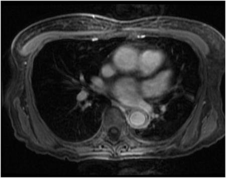
AKawasaki disease(1%)
BTakayasu arteritis(92%)
CGiant cell arteritis(3%)
DPolyarteritis nodosa(0%)
EAortic dissection(3%)
Your answerB
Correct answerB. Takayasu arteritis
Vital Concept
Takayasu arteritis shows concentric arterial wall inflammation most commonly affecting the subclavian artery, common carotid artery, and brachiocephalic trunk. MRI is the preferred first-line for imaging as it evaluates both vessel wall inflammation and luminal changes without radiation exposure.
Explanation
Takayasu arteritis
This is a T1 weighted fat-saturated post-contrast thoracic MR. There is concentric thickening of the descending aorta with diffuse mural enhancement (yellow arrows). Takayasu arteritis is a granulomatous vasculitis of medium and large vessels, which frequently causes smooth narrowing of the aorta and large aortic branches as well as, occasionally, the pulmonary arteries. It is frequently known as “pulseless disease” due to its involvement of the subclavian arteries producing asymmetric stenosis with subsequent upper extremity asymmetric pulses and blood pressure.
Incorrect Answers:
A. Kawasaki disease is an inflammatory disease of medium and small blood vessels most commonly seen in young children. The typical acute clinical presentation is with marked lymphadenopathy, persistent fever, mucocutaneous inflammation, and erythematous palmar-solar rash. A delayed complication of Kawasaki disease is the formation of coronary aneurysms.
C. Giant cell arteritis, or temporal arteritis, is a granulomatous vasculitis of medium to large vessels that typically produces painful inflammation of the temporal arteries, most commonly in elderly patients.
D. Polyarteritis nodosa is a necrotizing vasculitis of medium and small vessels that produces prominent microaneurysms and occlusions. The typical imaging presentation is multiple aneurysms and segmental multifocal stenoses of medium-sized arteries on angiography.
E. Aortic dissection typically produces a visible dissection flap within the aortic lumen, rather than the ill-defined periaortic stranding, wall thickening, and smooth narrowing seen in this case.
Vital Concept: Takayasu arteritis shows concentric arterial wall inflammation most commonly affecting the subclavian artery, common carotid artery, and brachiocephalic trunk. MRI is the preferred first-line for imaging as it evaluates both vessel wall inflammation and luminal changes without radiation exposure.
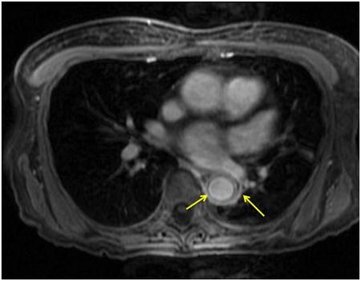
Q2
moderate QID 2867
Correct
A 3-year-old male presents with vomiting and lethargy. The following imaging was obtained. Which of the following is the most likely diagnosis?
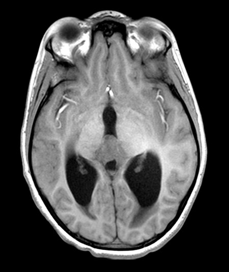
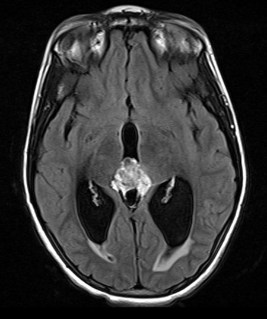
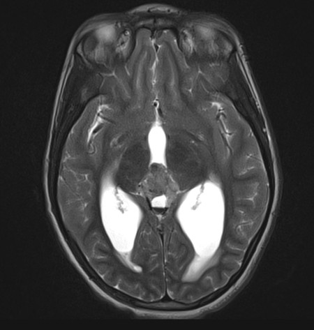
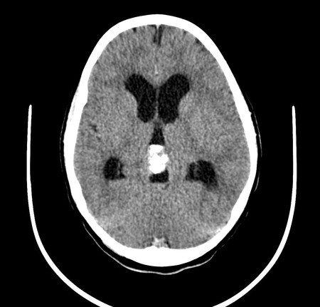
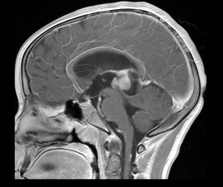
APineocytoma(17%)
BPineoblastoma(82%)
CAstrocytoma(1%)
DMetastatic disease(0%)
EPineal cyst(0%)
Your answerB
Correct answerB. Pineoblastoma
Vital Concept
The triad of very young age, pineal location, and CSF dissemination (evidenced by spinal enhancing lesion) is virtually diagnostic of pineoblastoma, which carries a poor prognosis despite aggressive treatment, making rapid diagnosis and staging crucial for treatment planning.
Explanation
Pineoblastoma
The combination of very young age (3 years), pineal region mass, and CSF dissemination (yellow arrow) is classic for pineoblastoma. The enhancing cervical spinal cord lesion represents "drop metastases"—CSF seeding that is characteristic of this highly malignant WHO Grade IV tumor. Pineoblastomas are known for aggressive behavior with frequent subarachnoid space dissemination at presentation.
Incorrect Answers:
A. While pineocytoma and pineoblastoma can be difficult to differentiate by imaging at times, this lesion has CSF dissemination (yellow arrow), which are more specifically associated with pineoblastomas. Also, the typical age of presentation of pineocytoma is in adulthood.
C. The lesion is primarily centered in the pineal gland, which is unusual for an astrocytoma. Astrocytomas in this region typically arise from the tectum and are typically grade I tumors showing no enhancement or calcification.
D. Metastatic disease to the pineal gland has only rarely been reported and would be unusual for a patient of this age. The location, patient age, and aggressive features, including CSF dissemination (yellow arrow), are highly suggestive of pineoblastoma.
E. The lesion is predominantly solid and shows aggressive features. This is not a pineal cyst.
Vital Concept: The triad of very young age, pineal location, and CSF dissemination (evidenced by spinal enhancing lesion) is virtually diagnostic of pineoblastoma, which carries a poor prognosis despite aggressive treatment, making rapid diagnosis and staging crucial for treatment planning.
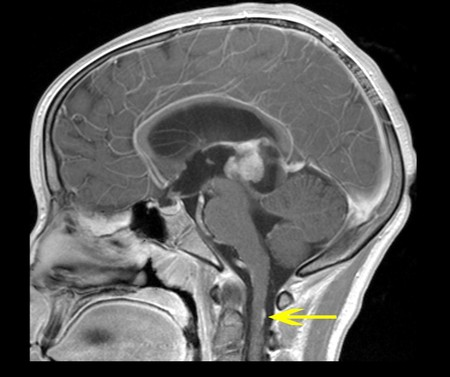
Q3
moderate QID 47286
Correct
A 48-year-old female patient with irritability, muscle weakness, sleeping problems, and an enlarged thyroid on clinical exam undergoes the ultrasound shown below. Which of the following is the most likely diagnosis?
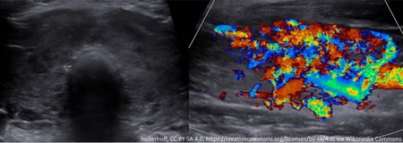
AHashimoto's thyroiditis(14%)
BNon-Hodgkin's lymphoma(0%)
CGraves' disease(82%)
Dde Quervain thyroiditis(3%)
ERiedel thyroiditis(1%)
Your answerC
Correct answerC. Graves' disease
Vital Concept
Graves' disease creates "thyroid inferno" on Doppler with markedly increased parenchymal vascularity throughout the gland.
Explanation
Graves' disease
The ultrasound shows diffuse enlargement of the thyroid gland with marked hypervascularity on color Doppler imaging. This appearance, which has been termed “thyroid inferno,” as well as the clinical presentation, is diagnostic of Graves' disease, an autoimmune disease characterized by hyperthyroidism due to circulating thyroid stimulating immunoglobulins (TSIs), which activate thyrotropin receptors.
Incorrect Answers:
A. Hashimoto's thyroiditis is an autoimmune process in which patients, predominantly women, develop antibodies to thyroglobulin and the thyroid peroxidase enzyme. This results in lymphocytic infiltration of the thyroid gland with lymphoid follicles replacing thyroid follicles and gives the appearance of a diffuse, hypoechoic, heterogeneous, micronodular echo pattern. Patients are most often euthyroid with normal T3 and T4 hormones (subclinical hypothyroidism).
B. Thyroid non-Hodgkin's lymphoma appears as focal or diffuse hypoechoic parenchyma, often with extrathyroid spread and adenopathy. A history of antecedent Hashimoto's thyroiditis may precede lymphoma of the thyroid.
D. de Quervain thyroiditis appears as focal, ill-defined hypoechoic areas within thyroid. Vascularity may be increased or normal. Clinically, patients present with fever, leukocytosis, and pain.
E. Riedel thyroiditis represents benign fibrosis of part or all of the thyroid gland. It is seen as diffuse enlargement and extension to surrounding tissues.
Vital Concept: Graves' disease creates "thyroid inferno" on Doppler with markedly increased parenchymal vascularity throughout the gland.
Q4
moderate QID 21201
Correct
This 60-year-old ICU patient with abnormal liver function tests was suspected of having chronic cholecystitis. A cholecystokinin (CCK) study was ordered to evaluate this. Which of the following is the lower limit for normal gallbladder ejection fraction?
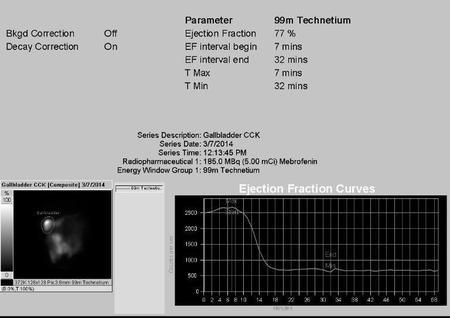
A15%(2%)
B25%(5%)
C35%(82%)
D45%(6%)
E55%(5%)
Your answerC
Correct answerC. 35%
Vital Concept
Values less than 35% are considered abnormal gallbladder ejection fractions.
Explanation
35%
Although gallbladder ejection fraction (EF) has a broad range of normal, values less than 35% are considered abnormal. This patient clearly has a normal EF with prompt gallbladder contractility and emptying following CCK injection.
Incorrect Answers:
A. Gallbladder ejection fraction (EF) less than 35% are considered abnormal. A 15% gallbladder EF would be abnormal.
B. Gallbladder EF less than 35% are considered abnormal. A 25% gallbladder EF would be abnormal.
C. A gallbladder EF of 45% would be within normal limits.
E. A gallbladder EF of 55% would be within normal limits.
Vital Concept: Values less than 35% are considered abnormal gallbladder ejection fractions.
Q5
easy QID 3072
Correct
This 40-year-old male patient had erectile dysfunction. Sonography of the penis was done. Which of the following is the most likely diagnosis?
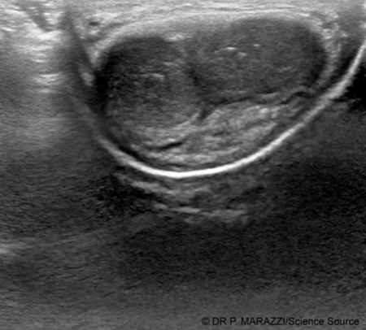
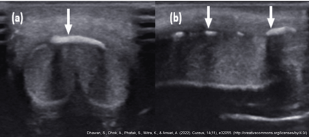
ANormal study(0%)
BPenile mass(0%)
CPenile calcification, a case of Peyronie disease(97%)
DPenile vascular malformation(0%)
EPenile fracture(2%)
Your answerC
Correct answerC. Penile calcification, a case of Peyronie disease
Vital Concept
Calcified plaques characteristic of Peyronie disease appear hyperechoic with acoustic shadowing; ultrasound has extremely high sensitivity for this entity and is an important tool for diagnosis and monitoring.
Explanation
Penile calcification, a case of Peyronie disease
Multiple large echogenic plaques with posterior shadowing are seen on the dorsum along the tunica albuginea of the penis, compatible with calcified plaques. Peyronie disease of the penis results in extensive fibrosis and later, calcification of the erectile tissue (as seen here), producing sexual and erectile dysfunction. There is no evidence of any vascular anomalies nor is there any evidence of penile mass.
Incorrect Answers:
A. This is not a normal study.
B. No evidence of penile mass lesions is present.
D. No evidence of penile vascular malformations is seen.
E. There is no evidence of traumatic fracture of the penis.
Vital Concept: Calcified plaques characteristic of Peyronie disease appear hyperechoic with acoustic shadowing; ultrasound has extremely high sensitivity for this entity and is an important tool for diagnosis and monitoring.
Q6
hard QID 43729
Incorrect
Which of the following is the most likely diagnosis in this 52-year-old patient with recurrent nasal congestion and discharge?
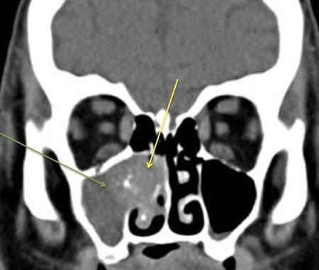
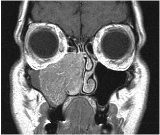
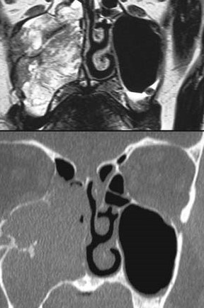
AAllergic fungal sinusitis(12%)
BSinonasal mucocele(2%)
CSinonasal polyposis(2%)
DInverted papilloma(76%)
ESquamous cell carcinoma(8%)
Your answerA
Correct answerD. Inverted papilloma
Explanation
Inverted papilloma
The CT demonstrates a mass located in the lateral nasal wall with focal coarse calcifications (yellow arrow), as well as bony resorption and extension into the maxillary sinus (green arrow). This is redemonstrated on the contrast-enhanced MR, in which there is a cerebriform pattern of enhancement (red arrows). This appearance is a distinguishing feature of an inverted papilloma.
Inverted papillomas are rare, accounting for approximately 0.5 to 4.0% of all nasal tumors. They are most frequently seen in patients 40 to 60 years of age, with a significant predilection for males (M:F ~ 3-5:1). Presentation can be similar to other sinonasal masses, with nasal obstruction, sinus pain, and epistaxis. Inverted papillomas most commonly occur on the lateral wall of the nasal cavity, where they are frequently related to middle turbinate and maxillary ostium. As they enlarge, bony remodeling and resorption occurs, which often extends into the maxillary antrum.
Incorrect Answers:
A. Allergic fungal sinusitis is a severe form of chronic recurrent sinusitis with production of eosinophilic mucin containing noninvasive fungal hyphae. The MR signal varies depending on the content of the material, as in mucocele. However, usually there is more signal heterogeneity than seen here secondary to debris, as well as a thicker rind of enhancement (not solid enhancement). The ethmoid sinus is the most common location, followed by the maxillary, frontal, and sphenoid sinuses.
B. Mucoceles are the most common expansile lesion of paranasal sinuses. They are characterized by an opacified, expanded sinus with thin peripheral enhancement and smooth remodeling of walls. They are seen most often in the frontal sinus, followed by the ethmoid, maxillary, and sphenoid sinuses. The MR signal characteristics vary based on the fluid and protein content of the mass. Solid enhancement rules this diagnosis out.
C. Sinonasal polyposis refers to nonneoplastic, inflammatory swelling of sinonasal mucosa that buckles to form polyps. The process involves multiple sinuses and the nasal cavity, and is characterized by mucin production with a high-water content, typically yielding high T2 and low T1 signal. Solid enhancement rules this diagnosis out.
E. In squamous cell carcinoma, one would expect a more overall aggressive appearance. SCC destroys rather than remodels bones in most cases. It typically originates within maxillary antrum and then spreads into the nasal cavity, not vice versa. Lastly, the cerebriform pattern of enhancement seen here is not present.
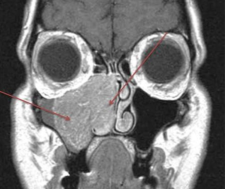
Q7
moderate QID 44076
Correct
A 65-year-old female patient presents to the gynecologist for a follow-up appointment due to persistent vaginal bleeding. The patient is referred for an ultrasound examination. Which of the following correctly states the upper limit of normal for their endometrial thickness?
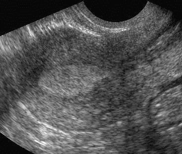
A1.5 mm(1%)
B3 mm(6%)
C8 mm(11%)
DLess than 5 mm(81%)
E15 mm(2%)
Your answerD
Correct answerD. Less than 5 mm
Vital Concept
In symptomatic postmenopausal women with abnormal uterine bleeding, an endometrial thickness ≤4mm on transvaginal ultrasound effectively excludes endometrial cancer with very high sensitivity, supporting current ACR and ACOG guidelines that recommend endometrial sampling for thickness ≥5mm.
Explanation
Less than 5 mm
Endometrial biopsy is required for histological diagnosis if the endometrium is not adequately visualized, the endometrial stripe 5 mm (focal or global) or thicker, and in women with persistent bleeding. The postmenopausal endometrial evaluation should take into consideration the patient’s clinical history (e.g., vaginal bleeding) and whether the patient has undergone hormonal replacement therapy.
The normal postmenopausal endometrium should appear thin, homogeneous, and echogenic. Although there is controversy regarding endometrial thickness with menopause, in general, a double-layer thickness of less than 4 mm without focal thickening excludes significant disease and is consistent with atrophy. A cutoff of ≤ 4 mm yields a false-negative rate for endometrial cancer of 0.25 to 0.5%.
The endometrium in a patient undergoing hormonal replacement therapy may vary in thickness, and the acceptable range of endometrial thickness is less well-established in this group.
Any thickness greater than 5 mm in the setting of postmenopausal bleeding or any endometrial heterogeneity or focal thickening seen at transvaginal US should be investigated further with sonohysterography, biopsy, or hysteroscopy. Endometrial sampling in the gynecologist’s office can lead to false-negative results if a focal abnormality is not sampled.
Incorrect Answers:
A. B. These are within the range of normal.
C. Cut-off values of 8 to 11 mm (D) have been suggested. The risk of carcinoma is ~7% if the endometrium is > 11 mm, and 0.002% if endometrium is < 11 mm.
E. This is well above the upper limit of normal.
Vital Concept: In symptomatic postmenopausal women with abnormal uterine bleeding, an endometrial thickness ≤4mm on transvaginal ultrasound effectively excludes endometrial cancer with very high sensitivity, supporting current ACR and ACOG guidelines that recommend endometrial sampling for thickness ≥5mm.
Q8
moderate QID 22604
Correct
A 9-year-old female patient presents with worsening flank pain and dysuria. Which of the following is the diagnosis? (top image = sagittal left kidney; bottom image = transverse urinary bladder).
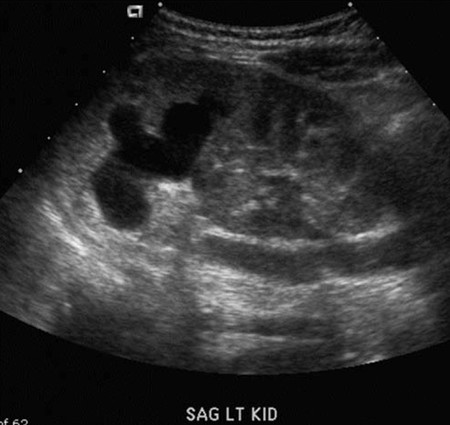
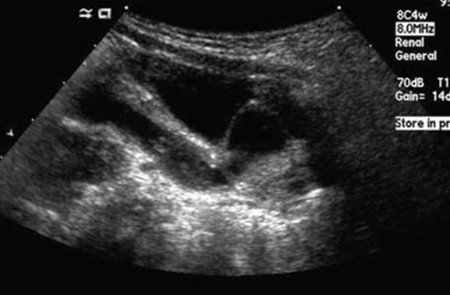
ARenal cell carcinoma(5%)
BImpacted ureteral stone(4%)
CTransitional cell carcinoma(3%)
DUreterocele(87%)
EColumn of Bertin(2%)
Your answerD
Correct answerD. Ureterocele
Vital Concept
In duplicated collecting systems, upper pole moieties typically have ectopic ureters with ureteroceles per Weigert-Meyer rule. Ultrasound shows asymmetrical renal length with dilated upper pole pelvicalyceal system due to obstruction. Ultrasound detects ureteroceles and hydronephrosis but may miss complete tract abnormalities.
Explanation
Ureterocele
The ultrasound shows a dilated collecting system in the upper pole of the kidney (blue arrow). The upper image shows that the entire ureter is dilated (red arrow) and that there is a ureterocele (green arrow). Ureteropelvic duplications are a relatively common cause of urinary tract obstruction in pediatric patients. They are typically characterized by the presence of two renal pelves and/or two ureters. The duplicated ureters may drain separately into the urinary bladder or join together at some point along their length. The drainage pattern is said to be governed by the Weigert-Meyer rule, which states that the upper pole moiety most frequently inserts ectopically inferomedial to the lower pole insertion and is more likely to obstruct. The lower pole moiety more frequently inserts normally and more frequently refluxes. The upper pole moiety may insert at any point along the distal genitourinary tract including the bladder, urethra, or vagina. If the ureter inserts at any point distal to the urinary sphincter, the patient will likely present with ongoing continuous urinary leakage. The upper pole moiety insertion is frequently associated with a ureterocele at its insertion, which is often the culprit of the urinary obstruction.
Incorrect Answers:
A. Renal cell carcinoma often produces an exophytic cortically-based mass and rarely is a source of urinary tract obstruction. Furthermore, it is an uncommon diagnosis in the pediatric population.
B. Impacted ureteral stones may produce urinary tract obstruction. However, ureteral stones frequently are seen as echogenic, shadowing foci within the ureter. This appearance is not seen in this case.
C. Transitional cell carcinoma (TCC) in the ureter may produce a focal mass lesion that can lead to ureteral obstruction. On excretory urography, it is said to produce a “goblet” shaped filling defect. It tends to be infiltrative in the renal parenchyma when it invades the kidney and produces a more diffuse pattern of irregular contrast enhancement, rather than focally producing a renal contour abnormality, which is a characteristic finding in the presence of renal cell carcinoma (RCC). Additionally, when evaluating TCC patients, special attention should be paid to the distal collecting system, ureter, and bladder, as TCC tends to be a multicentric tumor with metachronous and synchronous lesions quite common within the lower tract when an upper tract tumor is seen (and vice versa). Transitional cell carcinoma is quite rare in the pediatric population.
E. Columns of Bertin are thickened bands of cortical tissue separating renal pyramids that may mimic renal duplication as well as renal masses. They tend to be isoechoic and isoattenuating to the renal cortex and are more commonly seen at the junction of the upper and middle thirds of the kidney. One must be careful not to mistake these for renal masses in order to prevent unnecessary biopsies and resections.
Vital Concept: In duplicated collecting systems, upper pole moieties typically have ectopic ureters with ureteroceles per Weigert-Meyer rule. Ultrasound shows asymmetrical renal length with dilated upper pole pelvicalyceal system due to obstruction. Ultrasound detects ureteroceles and hydronephrosis but may miss complete tract abnormalities.
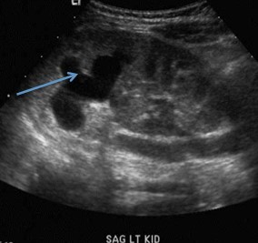
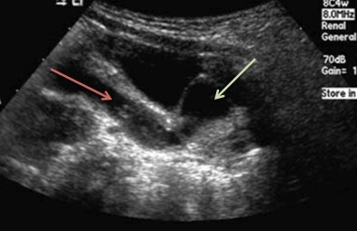
Q9
easy QID 41448
Correct
A 46-year-old patient is undergoing a radioactive thyroid uptake study and is accompanied by their partner. Which of the following areas would be restricted to their partner for radioactive safety reasons?
AFile room(0%)
BWaiting room(2%)
CThyroid uptake room(97%)
DChief technologist office(0%)
EHallways(0%)
Your answerC
Correct answerC. Thyroid uptake room
Explanation
Thyroid uptake room
For regulatory purposes, areas in a typical nuclear medicine department are considered to be either restricted or unrestricted. Restricted areas are those to which access is limited by the licensee for the purpose of protecting individuals against unnecessary risks from exposure to radiation and radioactive materials. An area where a member of the general public could receive at least 100 mrems per year or 2 mrems per hour is considered restricted. Examples of typically restricted areas include the hot lab, imaging rooms, thyroid uptake room, supply areas, procedure areas, shipping, and receiving areas. Unrestricted areas are those areas to which access is neither limited nor controlled and generally include the reception area, file room, waiting room, physician office, chief technologist office, hallways, and bathroom.
Q10
easy QID 82849
Correct
A 55-year-old man presents to his primary care physician with chronic chest discomfort and difficulty swallowing solids and liquids, which recently became associated with vomiting and chest discomfort after meals. The patient denies significant weight loss, abdominal pain, or gastrointestinal bleeding. An esophageal motility study shows decreased peristalsis and delayed lower esophageal sphincter relaxation. What is the pathophysiology of the most likely diagnosis?
ADiscrete stricture of the esophagus(20%)
BEosinophilic infiltration of the esophagus(4%)
CLoss of inhibitory neurons of the esophagus(74%)
DPhysical obstruction due to malignancy(2%)
Your answerC
Correct answerC. Loss of inhibitory neurons of the esophagus
Vital Concept
Achalasia results from a loss of inhibitory neurons in the esophagus, leading to delayed relaxation of the lower esophageal sphincter and reduced esophageal peristalsis. This may cause chronic dysphagia to solids and liquids. A barium esophagram and manometry are consistent with distal obstruction.
Explanation
Loss of inhibitory neurons of the esophagus
Achalasia is a relatively common cause of dysphagia resulting from the degeneration of inhibitory neurons of the esophagus. This leads to decreased peristalsis, delayed lower esophageal sphincter relaxation, and esophageal obstruction. The presentation is often of chronic symptoms persisting for years before diagnosis. Dysphagia for solids and liquids occurs, with regurgitation of retained food in the esophagus in more severe cases. Nonspecific chest discomfort and reflux may be reported.
A barium esophagram classically shows a “bird beak” appearance of the distal esophagus caused by a narrow gastroesophageal junction with a contracted lower esophageal sphincter and delayed esophageal emptying. Manometry reveals diminished esophagus peristalsis, typically occurring in the distal portion, and impaired lower esophageal sphincter relaxation. Treatment is usually guided by symptoms and often involves manual dilation, botulinum toxin injection, or nitrates to promote relaxation or surgical myotomy in severe cases.
Incorrect Answers:
A. Discrete stricture of the esophagus typically occurs in the setting of reflux, radiation, or immunologic infiltration and causes a gradual onset of dysphagia to solids.
B. Infiltration of the esophagus by eosinophils (eosinophilic esophagitis) leads to strictures and dysphagia, predominantly to solids.
D. Achalasia does increase the risk of esophageal cancer. However, the overall incidence of developing esophageal cancer is still low at around 0.34% annually in these patients. Routine surveillance is not currently recommended
Vital Concept: Achalasia results from a loss of inhibitory neurons in the esophagus, leading to delayed relaxation of the lower esophageal sphincter and reduced esophageal peristalsis. This may cause chronic dysphagia to solids and liquids. A barium esophagram and manometry are consistent with distal obstruction.
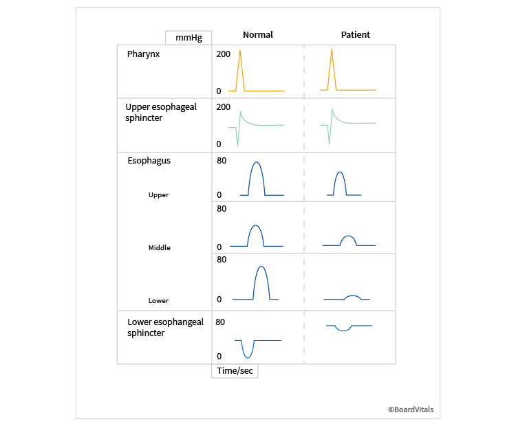
Q11
moderate QID 2676
Correct
A non-palpable asymmetry is seen in the superior left breast on mediolateral oblique (MLO) view and not identified on the craniocaudal (CC) view. On a true lateral view, the lesion moves more superiorly. In which of the following quadrants is this finding most likely located?
AUpper outer(12%)
BUpper inner(85%)
CLower outer(1%)
DLower inner(2%)
Your answerB
Correct answerB. Upper inner
Vital Concept
A useful mnemonic to remember this triangulation is muffins rise, lead falls. Medial masses rise on the lateral view and lateral masses fall on the lateral view.
Explanation
Upper inner
The 90-degree mediolateral (ML) is used to evaluate an asymmetry seen only on the MLO view. If it moves down on the lateral film or is located lower than it was on the MLO film, then it is in the lateral aspect of the breast.
However, if it moves up relative to the nipple or is located higher than it was on the MLO film, then it is in the medial aspect of the breast.
If it does not significantly change in position, then it must be located in the central aspect of the breast.
Incorrect Answers:
A. C. D. As discussed above, these are incorrect quadrants.
Vital Concept: A useful mnemonic to remember this triangulation is muffins rise, lead falls. Medial masses rise on the lateral view and lateral masses fall on the lateral view.
Q12
easy QID 56272
Correct
Regarding gadolinium-based contrast administration and the development of nephrogenic systemic fibrosis (NSF), which of the following statements is most accurate?
ANephrogenic systemic fibrosis is a self-limiting disease that is rarely, if ever, fatal.(1%)
BPatients with acute or severe chronic renal disease are considered to be at increased risk.(95%)
CThere is a well-documented association between metabolic acidosis, immunosuppression and infection, and the development of nephrogenic systemic fibrosis following gadolinium administration.(1%)
DMost cases of nephrogenic systemic fibrosis occur following the administration of fractional gadolinium doses.(1%)
Your answerB
Correct answerB. Patients with acute or severe chronic renal disease are considered to be at increased risk.
Vital Concept
Nephrogenic systemic fibrosis is a potentially fatal fibrosing disease occurring in severe chronic kidney disease (estimated glomerular filtration rate less than 30) or acute kidney injury.
Explanation
Patients with acute or severe chronic renal disease are considered to be at increased risk.
Following gadolinium contrast administration, the development of nephrogenic systemic fibrosis has occurred only in patients with severe, chronic renal failure or acute renal failure.
Incorrect Answers:
A. Nephrogenic systemic fibrosis is a progressive disease with no cure, which can affect the skin and organs, and has been well documented as a cause of death in some patients. It is not self-limiting.
C. Several associated risk factors, besides renal impairment, have been studied, including metabolic acidosis, immunosuppression, ongoing systemic inflammatory mediators, and phosphate, magnesium, iron and calcium derangements. However, none of these have been conclusively shown to be associated with the development of nephrogenic systemic fibrosis.
D. Nearly all cases of nephrogenic systemic fibrosis have occurred after the administration of single-strength sequential doses of gadolinium contrast or single-instance multiple-dose-strength administration of gadolinium contrast. Fractional dose administration is recommended and is not considered a cause in patients requiring gadolinium administration who are at increased risk for the development of nephrogenic systemic fibrosis.
Vital Concept: Nephrogenic systemic fibrosis is a potentially fatal fibrosing disease occurring in severe chronic kidney disease (estimated glomerular filtration rate less than 30) or acute kidney injury.
Q13
hard QID 48134
Correct
Which of the following is accurate regarding the underlying condition of the process shown below?
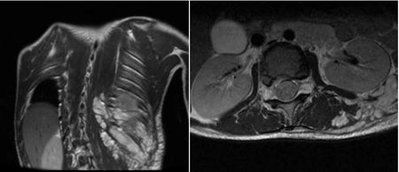
AIt is confined to the central and peripheral nervous system.(15%)
BIt occurs at an older age.(2%)
CThere is no increased risk of malignancy.(5%)
DIt has an autosomal recessive inheritance pattern.(18%)
EUp to half of cases are secondary to a new mutation.(60%)
Your answerE
Correct answerE. Up to half of cases are secondary to a new mutation.
Vital Concept
Neurofibromatosis type 1 occurs as a new mutation in 50% of cases, with the remaining 50% being familial (inherited in an autosomal dominant pattern).
Explanation
Up to half of cases are secondary to a new mutation.
The images show a right convex sclerotic curvature of the thoracic spine as well as large T2 hyperintense masses along multiple neuroforamina and intercostal space (blue arrows). These are plexiform neurofibromas in this patient with type I neurofibromatosis (NF). In half of cases, the disease is inherited as an autosomal dominant condition; in the other 50% of cases the disease is due to a new mutation.
Incorrect Answers:
A. Neurofibromatosis type 1 (NF1), or von Recklinghausen disease, is a multisystem neurocutaneous disorder and the most common phakomatosis. It affects the skin, central nervous system, and musculoskeletal system most often. Neurofibromatosis is relatively common, affecting 1:2500 to 3000 individuals.
B. In comparison to NF 2, NF1 has a much earlier age of onset. Approximately half of patients meet the diagnostic criteria for NF1 by the age of 1 year and nearly 100% meet the criteria by the age of 8 years.
C. The NF1 gene locus is on chromosome 17q11.2 and the gene product is neurofibromin, which acts as a tumour suppressor. Inactivation of the gene, thus, predisposes to tumor development.
D. In half of cases, the disease is inherited as an autosomal dominant condition; in the other 50% of cases the disease is due to a new mutation.
Vital Concept: Neurofibromatosis type 1 occurs as a new mutation in 50% of cases, with the remaining 50% being familial (inherited in an autosomal dominant pattern).
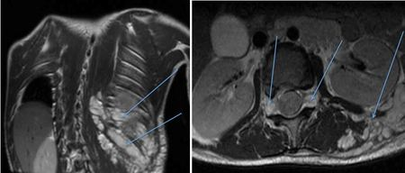
Q14
easy QID 39325
Correct
A radiologist working in their hospital’s OB/GYN department notices that pamphlets explaining obstetrical sonography are written at a college reading level. The radiologist then works with the department to make the pamphlet language more understandable for a greater range of patients. Which of the following professional responsibilities is the radiologist most likely exemplifying?
ACommitment to a just distribution of finite resources(4%)
BCommitment to improving access to care(93%)
CCommitment to maintaining trust by managing conflicts of interest(0%)
DCommitment to professional responsibilities(3%)
EScientific knowledge(0%)
Your answerB
Correct answerB. Commitment to improving access to care
Explanation
Commitment to improving access to care
The radiologist’s attempt to make medical information more understandable for patients signifies improving access to care. Physicians should be dedicated to making uniform and quality health care available by eliminating access barriers based on education, laws, finances, geography, or social discrimination. Improving access to care also involves health advocacy and the promotion of public health.
Incorrect Answers:
A. Ensuring a just distribution of finite resources is a key professional responsibility. Physicians should practice medicine that is based on wise and cost-effective management of limited clinical resources. This involves avoiding unnecessary tests and procedures that would otherwise expose patients to avoidable harm and expenses.
C. Managing conflicts of interest is a key professional responsibility. Physicians must take care to avoid exposing themselves and their patients to situations that unnecessarily compromise patient care for personal gain. Physicians have a professional and ethical obligation to publicly disclose conflicts of interest that arise over the course of their professional careers.
D. Commitment to the medical profession is a key professional responsibility. Physicians should commit themselves to collaborating with other health care professionals in order to maximize patient care, participate in self-regulation of the profession, and create and implement standards that will be followed by current and future members of the profession.
E. Scientific knowledge is a key professional responsibility. Physicians must adhere to and practice scientific standards in their medical practice, in addition to promoting research and discovering new knowledge that can be beneficially employed by members of the profession. Physicians must protect the integrity of scientific knowledge with scientific evidence and medical experience.
Q15
moderate QID 21574
Correct
A 53-year-old male patient undergoes the study shown. Which of the following is the diagnosis?
Correct answerB. Right coronary artery (RCA) territory infarction
Explanation
Right coronary artery (RCA) territory infarction
The image shown is a delayed post-contrast short axis view of mainly the left ventricle. Myocardial delayed enhancement (MDE – blue arrows) is usually an indicator of pathology, and in the setting of infarction, MDE develops in coronary artery territorial pattern with the subendocardial myocardium first affected and then extending toward the epicardium. The thickness of MDE is prognostic of viability after revascularization. Typically, if < 50% of the myocardium is affected, there is a good prognosis for viability after reperfusion. If > 50% is affected, the patient may be managed medically rather than revascularized. In this case, the inferior wall of the myocardium is affected, indicating right coronary artery territorial infarction.
Incorrect Answers:
A. Myocardial involvement with sarcoidosis is typically a patchy mid-myocardial or subepicardial pattern. Occasionally, there may be confluent, transmural involvement in severe, chronic sarcoidosis.
C. The LAD territory is the anterior wall of the left ventricle and interventricular septum. This is not affected in this case.
D. The LCX territory is the lateral wall of the left ventricle. This is not affected in this case.
E. Viral myocarditis, similar to sarcoidosis, may produce patchy or confluent subepicardial MDE. Transmural confluent MDE suggests longstanding, severe involvement.
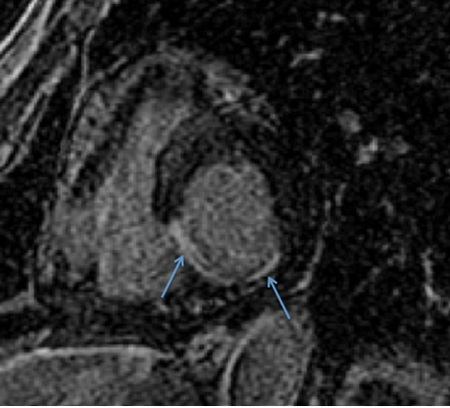
Q16
hard QID 43620
Incorrect
What is the most likely diagnosis in this 30-year-old male with hearing loss? Subsequent imaging (not shown) demonstrated no evidence of enhancement within the pertinent finding.
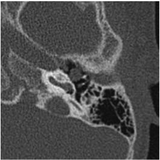
AAcquired cholesteatoma, pars flaccida variety(12%)
BFacial nerve schwannoma(4%)
CAcquired cholesteatoma, pars tensa variety(52%)
DCongenital cholesteatoma(20%)
EGlomus tympanicum paraganglioma(12%)
Your answerA
Correct answerC. Acquired cholesteatoma, pars tensa variety
Explanation
Acquired cholesteatoma, pars tensa variety
The CT image of the temporal bone shows a well-circumscribed, soft-tissue middle-ear mass located medial to the ossicles (red arrow). Given the location, patient, age, and symptoms, the most likely diagnosis is a acquired cholesteatoma. Lateral displacement of the ossicles is characteristic of acquired cholesteatoma arising from the pars tensa. Medial displacement of the ossicles is more commonly seen in acquired cholesteatoma arising from pars flaccida. Unlike other differential considerations for this finding, cholesteatoma does not enhance.
Acquired cholesteatomas represent a rest of epidermal tissue within the middle ear. They are more common than congenital cholesteatomas. They are seen in patients with history of chronic middle ear infections and are associated with perforation of the tympanic membrane. When detected early, they appear as a small, well-circumscribed soft-tissue middle-ear mass. Larger lesions may erode ossicles, middle ear wall, lateral semicircular canal, or tegmen tympani.
Incorrect Answers:
A. Acquired cholesteatoma, pars flaccida variety, though more common than its pars tensa counterpart, is more likely associated with medial displacement of the ossicles. In this case, the ossicles are displaced laterally.
B. A facial nerve schwannoma appears as a tubular mass emanating from tympanic CN7 canal, with or without enlargements of the bony facial nerve canal and geniculate fossa. These lesions tend to enhance.
D. Congenital cholesteatoma are theorized to arise from ectopic epithelial rests and can involve the mastoid, petrous, and squamous portions of the temporal bone; they are also commonly noted to arise just above the eustachian tube opening. They are seen typically between 20 and 40 years of age.
E. Glomus tympanicum paraganglioma is seen as a sessile soft tissue mass on the cochlear promontory without bony erosion. On physical exam one sees a pulsatile retrotympanic mass. These lesions tend to enhance.
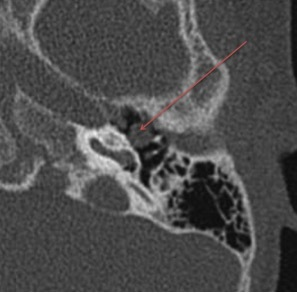
Q17
hard QID 2679
Incorrect
A 47-year-old female undergoes stereotactic biopsy for pleomorphic microcalcifications seen on mammography. The specimen radiograph at the time of biopsy showed the calcifications, but no calcifications are seen on pathologic analysis. Which of the following is the best next step in management?
ARepeat stereotactic biopsy(13%)
BExcisional biopsy(8%)
CRadiograph of the paraffin block specimen(79%)
D6-month follow-up(0%)
Your answerA
Correct answerC. Radiograph of the paraffin block specimen
Vital Concept
Imaging of the paraffin block specimen in this case helps to prevent a false-negative that may have resulted from undersampling of the specimen during pathological analysis. Ensuring concordance between prebiopsy imaging, specimen imaging and pathology helps to prevent false-negatives that can lead to delays in diagnosis.
Explanation
Radiograph of the paraffin block specimen
When undergoing stereotactic core needle biopsy for pleomorphic microcalcifications, diagnostic accuracy is dependent on the overall amount of calcifications present in the specimen as compared to pre-biopsy imaging. In this case, imaging of the paraffin block specimen helps to prevent a false-negative that may have resulted from undersampling of the specimen during pathological analysis.
Incorrect Answers:
A. At this point, repeat stereotactic biopsy is not warranted.
B. An excisional biopsy removes the entire tumor or abnormal area. A margin of normal breast tissue around the tumor may be taken depending on the reason for the biopsy.
D. A malignant diagnosis at stereotactic core-needle biopsy (SCNB) allows definitive surgical treatment planning, but a benign diagnosis at biopsy is typically followed with interval mammography at 6 to 12 months after the biopsy. As with needle-localized excisional biopsy (NLB), sampling error is a risk with SCNB, and false-negative benign results are particularly worrisome because this may delay the diagnosis.
Vital Concept: Imaging of the paraffin block specimen in this case helps to prevent a false-negative that may have resulted from undersampling of the specimen during pathological analysis. Ensuring concordance between prebiopsy imaging, specimen imaging and pathology helps to prevent false-negatives that can lead to delays in diagnosis.
Q18
moderate QID 43873
Correct
Based on the marked imaging finding, which of the following is this 45-year-old patient with wrist pain most at risk for?
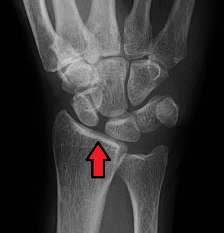
AScapholunate advanced collapse(84%)
BUlnar impaction syndrome(2%)
CKienbock's disease(6%)
DMidcarpal instability(4%)
Your answerA
Correct answerA. Scapholunate advanced collapse
Vital Concept
Scapholunate advanced collapse (SLAC), and scapholunate ligament injury, can be seen in the setting of scaphoid fracture and/or nonunion. However, in this case, there is not a non-united fracture present or substantial post-traumatic deformity of the scaphoid.
Explanation
Scapholunate advanced collapse
There is a widening of the scapholunate interval compatible with scapholunate dissociation with early proximal migration of the capitate beginning to fill in this widened space. Progression of this finding results in eventual degenerative change (joint space narrowing and subchondral sclerosis) of the radio-scaphoid joint. As this constellation of findings worsens, the patient will eventually meet criteria for scapholunate advanced collapse as the joint continues to widen and osteoarthritic changes worsen.
This entity is a pattern of wrist malalignment resulting from an untreated scapholunate ligament injury, in which there is a resultant widening of the scapholunate interval, volar rotatory subluxation of the scaphoid, and progressive chondromalacia and osteoarthritis.
Incorrect Answers:
B. Ulnar impaction syndrome, in which there is positive ulnar variance causing abutment of the lunate by the ulna, typically is seen as cystic change on the lunate radiographically.
C. Kienbock’s disease, or avascular necrosis of the lunate, appears radiographically as dense sclerosis of the lunate. Negative ulnar variance (which is incidentally present in this case), is associated with this entity.
D. Midcarpal instability is incorrect. The midcarpal ligaments, the triquetra-hamate-capitate, and scapho-capitate ligaments are most important, together with bridging the midcarpal joint as the arcuate ligament. There is no distinct capsular ligament on the volar aspect of the wrist that connects the lunate and the capitate bones. Failure of these ligaments results in a distinctive pattern of carpal collapse characterized by abnormal flexion of the unconstrained proximal row and known as volar intercalated segment instability (VISI).
Vital Concept: Scapholunate advanced collapse (SLAC), and scapholunate ligament injury, can be seen in the setting of scaphoid fracture and/or nonunion. However, in this case, there is not a non-united fracture present or substantial post-traumatic deformity of the scaphoid.
Often, the only difference between scaphoid nonunion advanced collapse (SNAC) and SLAC wrist arthritis involves the preservation of the articulation between the proximal pole of the scaphoid and the radius in SNAC wrists, since the proximal pole of the scaphoid appears to be unloaded and acts as an extension of the lunate through the intact scapholunate ligament
Q19
moderate QID 21178
Incorrect
A 19-year-old male patient presents with worsening right upper extremity swelling and pain. Which of the following treatment options is not indicated.
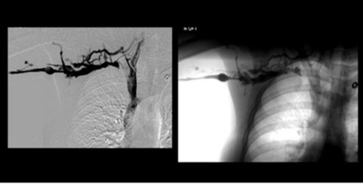
AMechanical thrombolysis(2%)
BChemical thrombolysis(3%)
CAngioplasty/venoplasty(4%)
DStent placement(50%)
ERib resection(40%)
Your answerC
Correct answerD. Stent placement
Explanation
Stent placement
Stent placement in the setting of Paget-Schroetter syndrome is not advised. Paget-Schroetter syndrome is a chronic venous thrombotic condition of the subclavian vein related to repetitive trauma from an adjacent cervical or first rib. It is seen here as a filing defect in the right subclavian vein (blue arrow) with numerous surrounding collateral vessels (yellow arrows). It is more frequently encountered in young male patients who participate in overhead throwing activities. It is initially treated with thrombolysis followed by balloon angioplasty/venoplasty. Occasionally, treatment requires resection of the first rib or a cervical rib. It is not usually treated with stent placement, as the repetitive trauma from adjacent osseous structures frequently results in stent fracture and restenosis.
Incorrect Answers:
A, B, C, and E. Mechanical thrombolysis and/or chemical thrombolysis (i.e., recombinant tissue plasminogen activator and/or heparin administration) are reasonable initial options in the treatment of Paget-Schroetter syndrome, though subsequent angioplasty/venoplasty is frequently required. Occasionally, even after angioplasty/venoplasty and anticoagulation, the patient requires surgical management in the form of clavicle, first rib, or cervical rib resection.
Q20
moderate QID 2953
Correct
An 81-year-old male presents to his primary care physician for the evaluation of cough and progressive dyspnea on exertion of several years' duration. The patient has a 20-pack-year smoking history but quit approximately 20 years ago. Which of the following is the most likely diagnosis?
Idiopathic pulmonary fibrosis is the most common interstitial pneumonia and is the term for the clinical syndrome associated with the histologic classification of usual interstitial pneumonia. Subpleural reticular opacities, macrocytic honeycombing, traction bronchiectasis, and the apicobasal gradient represent a constellation of signs that is highly suggestive of usual interstitial pneumonia.
Explanation
Usual interstitial pneumonia
Interstitial pneumonia is categorized according to different clinical, radiologic, and histologic classifications. Idiopathic pulmonary fibrosis (IPF) is the most common interstitial pneumonia and is the term for the clinical syndrome associated with the histologic classification of usual interstitial pneumonia.
The typical patient is 50 years old or older and presents with progressively worsening dyspnea and nonproductive cough. The chest radiograph is normal in early disease. Later, chest radiographs demonstrate decreased lung volumes and subpleural reticular opacities that increase from the lung apices to the bases. This apicobasal gradient is better appreciated on high-resolution CT images. Subpleural reticular opacities, macrocytic honeycombing, traction bronchiectasis, and the apicobasal gradient represent a constellation of signs that is highly suggestive of usual interstitial pneumonia. The diagnosis carries a poor prognosis.
Incorrect Answers:
B. Patients with nonspecific interstitial pneumonia present between 40 and 50 years of age with gradually worsening dyspnea, fatigue, and weight loss. Symptoms are generally milder than those in UIP (usual interstitial pneumonia). There is no gender predilection, and cigarette smoking is not considered to be a risk factor. The underlying etiology may include connective tissue diseases, hypersensitivity pneumonitis, or drug exposure, so these secondary forms must be ruled out. In early nonspecific interstitial pneumonia, the chest radiograph is normal. In advanced disease, bilateral pulmonary infiltrates are the most pronounced abnormality.
The lower lung lobes are more frequently involved; however, it is important to note that an obvious apicobasal gradient is generally absent. High-resolution CT reveals a subpleural and symmetric distribution of patchy ground-glass opacities, irregular linear or reticular opacities, and scattered micronodules. Ground-glass opacities remain the most obvious high-resolution CT feature due to the histologic finding of homogeneous interstitial inflammation. The key CT features that distinguish nonspecific pulmonary fibrosis from nonspecific interstitial pneumonia are homogeneous lung involvement without an apicobasal gradient, extensive ground-glass abnormalities, a finer reticular pattern, and micronodules.
C. Cryptogenic organizing pneumonia typically presents in patients of 55 years of age and older as mild dyspnea, cough, and fever that have progressed over several weeks. There may have been a preceding respiratory tract infection. There is no gender predilection or association with cigarette smoking. It may occur in a wide variety of entities including collagen vascular diseases and infectious and drug-induced lung disease. Therefore, cryptogenic organizing pneumonia is a diagnosis of exclusion. The chest radiograph demonstrates unilateral or bilateral patchy consolidations that resemble infiltrates. These are the result of intra-alveolar fibroblast proliferation, associated with a prior respiratory infection. Nodular opacities may be present. Lung volumes are typically preserved. The findings on CT are more pronounced than would be expected from plain chest radiographs alone. There is a peripheral or peribronchial distribution with the lower lung lobes most frequently involved. The appearances of lung opacities vary from ground glass to consolidation. The opacities have a tendency to migrate and change size, even without treatment. They are of variable size, ranging from a few centimeters to an entire lobe. The majority of patients recover completely after the administration of corticosteroids.
D. Respiratory bronchiolitis-associated interstitial lung disease is a smoking-related interstitial lung disease. There is a significant overlap in clinical, imaging, and histologic features between respiratory bronchiolitis-associated interstitial lung disease and desquamative interstitial pneumonia, so these entities are considered to be part of a continuum. Patients are usually between 30 and 40 years of age and have a long smoking history. Men are affected nearly twice as often as women. Patients complain of mild dyspnea and cough. Plain chest radiography is insensitive in the diagnosis of respiratory bronchiolitis-associated interstitial lung disease and is often normal. Sometimes, bronchial wall thickening or reticular opacities can be seen. High-resolution CT demonstrates diffuse lung involvement. The key features are centrilobular nodules in combination with ground-glass opacities and bronchial wall thickening. Ground-glass opacities correlate with macrophage accumulation in alveolar ducts and spaces while centrilobular nodules are caused by the peribronchial distribution of the intraluminal infiltrates. Coexisting centrilobular emphysema is commonly seen, given the predominance of smoking history. Smoking cessation is the most important component in management.
E. Acute interstitial pneumonia is the only interstitial pneumonia with acute onset of symptoms. In most cases, the clinical and imaging criteria for the diagnosis of acute respiratory distress syndrome are present. Most patients develop severe dyspnea with a need for mechanical ventilation within less than 3 weeks. The radiographic and high-resolution CT features of acute interstitial pneumonia are similar to those of acute respiratory distress syndrome; however, they are more likely to be symmetric and bilateral with a lower lobe predominance and sparing of the costophrenic angles. There are two distinct phases. In the early phase, ground-glass opacities are the dominant finding. They reflect the presence of alveolar septal edema and hyaline membranes. Areas of consolidation are less extensive and limited to the dependent area of the lung. Airspace consolidation results from intra-alveolar edema and hemorrhage. In the late phase, architectural distortion, traction bronchiectasis, and honeycombing are the most striking features. They are more severe in the non-dependent areas of the lung. Prognosis is poor, and treatment is largely supportive.
Vital Concept: Idiopathic pulmonary fibrosis is the most common interstitial pneumonia and is the term for the clinical syndrome associated with the histologic classification of usual interstitial pneumonia. Subpleural reticular opacities, macrocytic honeycombing, traction bronchiectasis, and the apicobasal gradient represent a constellation of signs that is highly suggestive of usual interstitial pneumonia.
Q21
easy QID 12318
Correct
A 31-year-old male presents with acute testicular pain and fever. He presents to the emergency department, where a testicular ultrasound was ordered and shown below. No prior history of malignancy is documented. What is the most likely diagnosis?
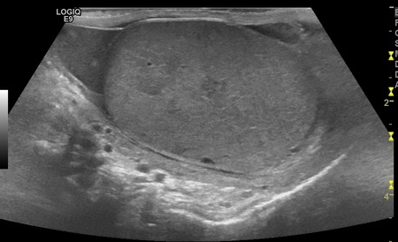
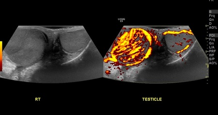
ATesticular infarct(1%)
BRight testicular infection/orchitis(98%)
CTesticular lymphoma(1%)
DTesticular contusion(0%)
Your answerB
Correct answerB. Right testicular infection/orchitis
Vital Concept
Orchitis appears as enlarged, heterogeneous testicular parenchyma with invariably increased Doppler flow on color/power Doppler. Most cases occur with concurrent epididymitis, and demonstrating normal spermatic cord flow excludes testicular torsion—the critical differential diagnosis in acute scrotal pain.
Explanation
Right testicular infection/orchitis
The right testicle is increased in size and heterogeneous in echotexture. Diffusely increased flow on Doppler is consistent with hyperemia. The constellation of findings is most consistent with orchitis of the right testicle. Infection of the testicle originates from the bladder or prostate gland, with spreading of infection via the vas deferens and lymphatics to the epididymis and then testicle.
Incorrect Answers:
A. No absence of flow is identified on the power Doppler imaging. The "decreased flow" in the left testicle relative to the right testicle is actually a result of hyperemia in the right testicle. Enlargement and heterogeneity of the right testicle suggest another diagnosis.
C. Testicular lymphoma is rare and presents as two types: diffuse/ infiltrative (more common), and focal type, which demonstrates multiple hypoechoic masses. This case shows the right testicle to be heterogeneous; however, no discrete mass is seen. Additionally, there is diffuse hyperemia of the right testicle; given the acuity of the patient's symptoms as well as pain, a diagnosis of lymphoma is much less likely.
D. While the right testicle is heterogeneous, no surrounding soft tissue swelling is identified. The power Doppler demonstrates diffusely increased hyperemia within the right testicle; in cases of testicular trauma, one would expect the areas of decreased hypoechogenicity to have decreased blood flow. Finally, no history of trauma was given.
Vital Concept: Orchitis appears as enlarged, heterogeneous testicular parenchyma with invariably increased Doppler flow on color/power Doppler. Most cases occur with concurrent epididymitis, and demonstrating normal spermatic cord flow excludes testicular torsion—the critical differential diagnosis in acute scrotal pain.
Q22
easy QID 44041
Correct
A 28-year-old female patient with severe cyclic pelvic pain undergoes a pelvic ultrasound. Based on the most likely diagnosis, which of the following would one expect to see on MRI?
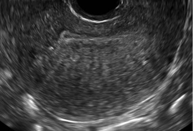
AA T1 hyperintense, T2 hypointense mass with fluid-fluid levels(4%)
BCircumscribed enhancing mass with low T1 and T2 signal(2%)
CA thickened T2 hypointense junctional zone and associated hyperintense cystic lesions on T2 weighted imaging(93%)
DA circumscribed complex mass with fat signal intensity(0%)
EAn irregular and heterogeneous mass with ascites, adenopathy, or invasion of adjacent structures(0%)
Your answerC
Correct answerC. A thickened T2 hypointense junctional zone and associated hyperintense cystic lesions on T2 weighted imaging
Vital Concept
Adenomyosis diagnosis relies on junctional zone thickening with supporting findings of submucosal microcysts within the thickened junctional zone and ill-defined junctional zone borders on T2-weighted sequences.
Explanation
A thickened T2 hypointense junctional zone and associated hyperintense cystic lesions on T2 weighted imaging
The sonographic image shows uterine enlargement with an asymmetrically thickened, heterogeneous myometrium (red arrow), which contains numerous tiny hypoechoic cysts (yellow arrows). These are features of adenomyosis, which represents ectopic endometrial tissue within the myometrium. On MRI one would see a thickened T2 hypointense junctional zone and associated hyperintense cystic lesions on T2 weighted imaging.
Incorrect Answers:
A. A T1 hyperintense, T2 hypointense (T2 shading) mass with fluid-fluid levels are features of an endometrioma, which presents a similar process: ectopic and completely extrauterine endometrial tissue.
B. A circumscribed enhancing mass with T1 and T2 signal are findings seen in fibroids.
D. A circumscribed fat signal mass is characteristic of a mature teratoma.
E. An irregular and heterogeneous mass with ascites, adenopathy, or invasion of adjacent structures would favor a diagnosis of uterine leiomyosarcoma.
Vital Concept: Adenomyosis diagnosis relies on junctional zone thickening with supporting findings of submucosal microcysts within the thickened junctional zone and ill-defined junctional zone borders on T2-weighted sequences.
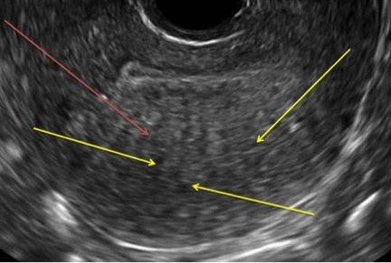
Q23
easy QID 20938
Correct
A 63-year-old male presents to the emergency room after history of hepatic cryoablation, now with hypotension and tachycardia. Which of the following is the diagnosis and management?
This examination demonstrates the presence of a replaced right hepatic artery, arising from the SMA, instead of its normal location, arising from the celiac trunk. This may have created confusion in selecting the approach and/or ablation zone, leading to hepatic arterial injury, resulting in hemorrhage. Pseudoaneurysm is seen. Further evidence for hemorrhage is the relatively lucent area at the periphery of the hepatic parenchyma, likely representing hematoma. The best management for this scenario is endovascular coil embolization.
Incorrect Answers:
A, B, and C. This appearance is unlikely to represent residual hypervascular tumor, as the presence of a hematoma would not be expected in this setting.
D. The large hematoma and active arterial extravasation suggest brisk bleeding that is leading to the patient’s hemodynamic compromise. Conservative management would not be a reasonable option.
Q24
moderate QID 21191
Correct
Here is a single axial CT image of a 57-year-old male on dialysis who presented with acute left renal and peri-renal hematoma. The patient also had ascites, pericardial effusion, and pleural effusions. Which of the letters corresponds to the peri-renal space?
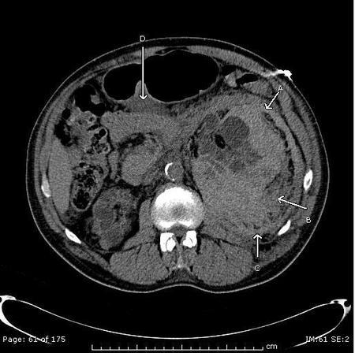
AA(7%)
BB(89%)
CC(3%)
DD(1%)
Your answerB
Correct answerB. B
Explanation
B
That is the peri-renal space.
Incorrect Answers:
A. That is the anterior para-renal space.
C. That is the posterior para-renal space.
D. That is the lesser sac containing ascites.
Q25
QID 24044
Incorrect
This was an incidental finding seen on computed tomography (CT) scan performed on a 45-year-old man with vague abdominal pain. Which of the following is the threshold measurement for the recommended treatment?
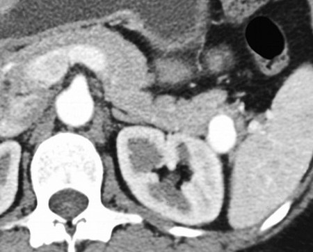
A1.0 cm(4%)
B1.5 cm(14%)
C3.0 cm(73%)
D4.0 cm(7%)
Your answerA
Correct answerC. 3.0 cm
Vital Concept
True splenic artery aneurysms greater than 3 cm require treatment due to rupture risk, while smaller asymptomatic aneurysms can be observed. Pseudoaneurysms and aneurysms in women of childbearing age require treatment regardless of size.
Explanation
3.0 cm
The treatment threshold for splenic artery aneurysms is based on size, patient demographics, and aneurysm characteristics. True splenic artery aneurysms greater than 3 cm warrant treatment due to rupture risk, while those less than 3 cm can typically be observed if asymptomatic and stable. However, pseudoaneurysms require treatment regardless of size due to higher rupture potential, and women of childbearing age should undergo repair regardless of aneurysm size given the devastating maternal and fetal mortality associated with pregnancy-related rupture. Observation studies have shown that small aneurysms demonstrate minimal growth rates and no ruptures during surveillance, supporting conservative management for appropriately selected patients.
Incorrect Answers:
A. B. D. These are incorrect reference points.
Vital Concept: True splenic artery aneurysms greater than 3 cm require treatment due to rupture risk, while smaller asymptomatic aneurysms can be observed. Pseudoaneurysms and aneurysms in women of childbearing age require treatment regardless of size.
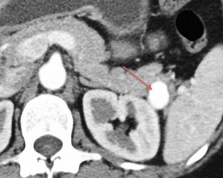
Q26
moderate QID 5118
Correct
Which statement is true regarding transmit power in ultrasound?
AIncreased transmit power decreases signal-to-noise ratio.(3%)
BDepth of penetration is unchanged at higher transmit power.(4%)
COverall image brightness is decreased with increased transmit power.(2%)
DThere is increased risk of bioeffects at higher transmit power.(87%)
ELateral resolution is improved at higher transmit power.(4%)
Your answerD
Correct answerD. There is increased risk of bioeffects at higher transmit power.
Vital Concept
Increased transmit power with ultrasound is associated with increased risk of bioeffects.
Explanation
There is increased risk of bioeffects at higher transmit power.
Increasing transmit power in ultrasound means increasing the electrical voltage applied to the transducer crystals. This results in stronger acoustic waves being emitted into the tissue, leading to higher amplitude echoes returning to the transducer. Consequently, it improves signal-to-noise ratio and enhances penetration depth but also increases the potential for thermal and mechanical bioeffects on the patient's tissues.
Incorrect Answers:
A. B.C. Increasing the transmit power increases the amplitude of the pulse emitted from the transducer. This has the effect of increasing signal-to-noise, increasing the depth of penetration, and increasing overall brightness.
E. Lateral resolution is primarily affected by beam width and is not related to transmit power.
Vital Concept: Increased transmit power with ultrasound is associated with increased risk of bioeffects.
Q27
QID 56251
Correct
A 45-year-old male patient presents with diplopia. Which of the following is the most likely diagnosis? Note that the posterior fossa cerebrovascular accident (CVA) is incidental.
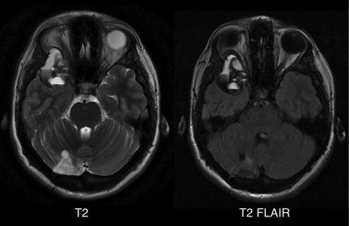
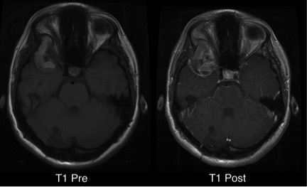
AChondrosarcoma(3%)
BGlioblastoma(1%)
CPilocytic astrocytoma(2%)
DAneurysmal bone cyst(94%)
Your answerD
Correct answerD. Aneurysmal bone cyst
Vital Concept
Aneurysmal bone cyst secondary to giant cell tumor appears as an expansile multiloculated T2 hyperintense lesion with characteristic fluid-fluid levels from altered hemodynamics causing intraosseous hemorrhage and blood-filled septated spaces.
Explanation
Aneurysmal bone cyst
The lesion in the skull base is centered in the sphenoid bone and demonstrates characteristic features of an aneurysmal bone cyst. Aneurysmal bone cysts (ABCs) demonstrate this pathognomonic soap bubble appearance with blood-fluid levels (arrows).
This aneurysmal bone cyst arose secondarily to an underlying giant cell tumor that was proven at pathology following resection. Giant cell tumors in the skull base are rare, representing only 1% of all giant cell tumors. However, in the skull base, the sphenoid and temporal bones are the most common sites. These lesions can be difficult to diagnose because they do not have a characteristic appearance. In this case, however, there is a concomitant ABC, which should be immediately recognizable.
Incorrect Answers:
A. Chondrosarcoma is also a skull base tumor; however, it is usually centered at the petro-occipital fissure and should be highly T2 hyperintense with robust enhancement.
B. Glioblastoma is an intraaxial tumor. Although the blood-fluid levels could be confused for an area of necrosis that is characteristic of this WHO Grade IV tumor, the lesion, in this case, is multilocular and extra-axial with a characteristic appearance of an aneurysmal bone cyst.
C. Pilocytic astrocytoma is an intra-axial tumor with a characteristic nodule-in-cyst appearance. This is included as an answer choice because it is commonly thought of as a cystic neoplasm but does not have any other reason to be considered in this case.
Vital Concept: Aneurysmal bone cyst secondary to giant cell tumor appears as an expansile multiloculated T2 hyperintense lesion with characteristic fluid-fluid levels from altered hemodynamics causing intraosseous hemorrhage and blood-filled septated spaces.
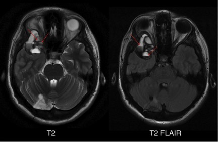
Q28
moderate QID 2950
Correct
A 38-year-old African-American woman presents for routine follow-up after a positive tuberculin skin test. She is a non-smoker with no personal or family history of cancer. She feels well and has no respiratory symptoms. Physical examination and routine labs are unremarkable. A chest radiograph shows a round, well-circumscribed mass within a preexisting pulmonary cavity in the upper lobe, with an air crescent surrounding it. Which of the following is the most likely diagnosis?
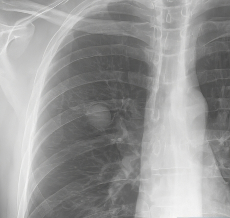
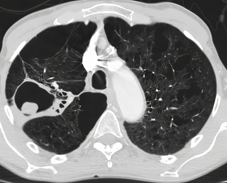
APulmonary sarcoidosis(7%)
BSecondary pulmonary tuberculosis(13%)
CAspergilloma(77%)
DPulmonary abscess(2%)
EBronchogenic carcinoma(1%)
Your answerC
Correct answerC. Aspergilloma
Vital Concept
Aspergillomas are mass-like balls found in the lung that are composed of the fungus Aspergillus fumigatus. Patients are typically asymptomatic when this diagnosis is made.
Explanation
Aspergilloma
Aspergillomas are mass-like balls composed of the fungus Aspergillus fumigatus. Aspergillomas occur in immune-competent patients with structurally abnormal lungs or those with pre-existing pulmonary cavities. Common risk factors include pulmonary tuberculosis, pulmonary sarcoidosis, bronchiectasis, or other pulmonary cavities. Patients are typically asymptomatic. The fungus ball can be seen on both plain films and CT with an air crescent sign. A mobile fungus ball evident on prone versus supine CT imaging has been historically termed the Monod sign and is compatible with aspergilloma. Air crescent sign without associated mobility of the cavitary contents is seen in recovering angioinvasive aspergillosis. On plain film, aspergillomas appear as round or ovoid attenuating masses located in a surrounding cavity and outlined by a crescent of air. Repositioning the patient demonstrates mobility of the mass and confirms the diagnosis.
On CT, aspergillomas appear as well-formed cavities with a round, central, soft tissue, attenuating mass surrounded by an air crescent sign. The mass may entirely fill the pre-existing cavity, obliterating the air crescent and eliminating any mobility. Calcification may be absent to heavy. Due to the inflammation and vascular granulation tissue formation, adjacent bronchial arteries may appear engorged or may be eroded, causing severe hemoptysis.
Incorrect Answers:
A. Sarcoidosis is a multi-system granulomatous condition. Most patients have pulmonary involvement, and chest radiography is used to stage the condition. Common radiographic manifestations are bilateral hilar and mediastinal nodal enlargement. The most common distribution of nodal enlargement involves bilateral hilar and right paratracheal nodal enlargement. This pattern is known as the 1-2-3 sign or Garland triad. Parenchymal features depend on the stage of disease and include reticulonodular opacities, airspace-like opacities, peripheral cavitation, end-stage fibrosis, traction bronchiectasis, and pleural effusions. A CT (especially a high-resolution CT) is better for defining parenchymal and nodal involvement and may be especially useful in patients with normal chest radiographs and low-stage disease. Parenchymal findings include irregular nodular thickening in a perilymphatic distribution; small miliary-like opacities, nodules, or large ground glass opacities; and fibrosis.
B. This patient's positive PPD is unlikely to represent active infection. Secondary tuberculosis following an initial infection occurs in the setting of immune compromise and usually involves the lung apex. The CT demonstrates ill-defined patchy consolidation, cavitation that usually develops within consolidation, fibroproliferative disease with coarse reticulonodular densities, endobronchial spread with tree-in-bud appearance, and healing resulting in fibrosis, volume loss, and traction bronchiectasis. Lymphadenopathy occurs in a few cases.
D. A pulmonary abscess is a circumscribed collection of pus in the lung. Pulmonary abscesses are divided into acute abscesses, which last <6 weeks, and chronic infections, which last >6 weeks. The presentation is similar to other non-cavitating chest infections. Aspiration is the most common cause, and the superior segment of the right lower lobe is the most common site of infection. The classic radiographic appearance of a pulmonary abscess is a cavity containing an air-fluid level. These abscesses are generally round in shape, although adjacent consolidation may make identification of the margin difficult. These features are helpful in distinguishing a pulmonary abscess from an empyema. A CT with contrast is the most sensitive and specific imaging modality for diagnosing a lung abscess and identifying its margins.
E. Bronchogenic carcinoma is the leading cause of cancer mortality worldwide in both men and women. Bronchogenic carcinoma refers to primary lung malignancies associated with inhaled carcinogens. The major risk factor is cigarette smoking. Other risk factors include radon, asbestos, uranium, arsenic, and chromium. Bronchogenic carcinomas are divided into non-small cell carcinoma and small cell carcinoma. While it may be radiologically impossible to distinguish between subtypes of lung carcinoma, a lung nodule is identified as a rounded or irregular region of increased attenuation measuring <3 cm. The degree of attenuation can further classify nodules as ground-glass, subsolid, or solid.
Vital Concept: Aspergillomas are mass-like balls found in the lung that are composed of the fungus Aspergillus fumigatus. Patients are typically asymptomatic when this diagnosis is made.
Q29
moderate QID 44010
Correct
A 37-year-old male patient presents for workup of chronic headache. Which of the following is commonly associated with the finding demonstrated?
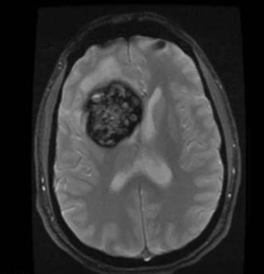
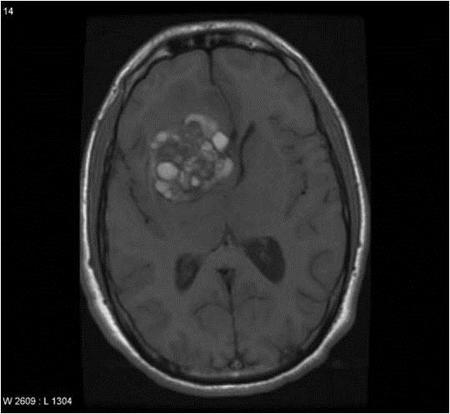
AVascular nidus(9%)
BArteriovenous fistula(1%)
CDisorganized capillaries(10%)
DDevelopmental venous anomaly(78%)
EPort wine stain(2%)
Your answerD
Correct answerD. Developmental venous anomaly
Vital Concept
Developmental venous anomalies (DVAs) coexist with cavernomas in 30% of cases, appearing as caput medusae radial vessels draining to a collector vein. DVAs must be preserved during cavernoma resection to prevent venous infarction.
Explanation
Developmental venous anomaly
\
The T1 sequence demonstrates a popcorn-like mass (blue arrow), which blooms on the gradient echo sequence (red arrow). This is the characteristic appearance of a cavernous malformation, the imaging features of which represent blood products of different ages.
Cavernous malformations are essentially a hamartoma of immature vascular channels that are benign in nature and often found incidentally. They are frequently associated with developmental venous anomalies (DVA), which are composed of a medusa head or umbrella shaped collection of abnormal venous structures centrally within the white matter with an associated draining vein which terminates in a dural venous sinus.
Incorrect Answers:
A. A vascular nidus would be expected in the presence of an arteriovenous malformation (AVM), which is a high-flow lesion composed of an abnormal connection between arterial and venous structures without an intervening capillary bed and with an associated disorganized nidus of vascular tissue. Frequently, there are grossly enlarged enhancing arterial and venous structures with associated flow-voids.
B. Arteriovenous fistula (AVF) is frequently seen as an abnormal single connection between arterial and venous structures and may be related to a history of trauma. Similarly, it is a high-flow lesion with multiple enlarged arterial and venous structures with associated vascular flow-voids.
C. Disorganized capillaries may be seen in the setting of capillary telangiectasia, which is a slow-flow lesion often only seen on post-contrast sequences as an ill-defined region of enhancement. These are frequently asymptomatic and without consequence. A common location is in the ventral pons.
E. A port wine stain is a facial angioma which would be present on physical exam in patients with Sturge-Weber syndrome. MR findings of Sturge-Weber syndrome include ipsilateral cortical volume loss, tram-track calcification, and enhancing pial angiomatosis.
Vital Concept: Developmental venous anomalies (DVAs) coexist with cavernomas in 30% of cases, appearing as caput medusae radial vessels draining to a collector vein. DVAs must be preserved during cavernoma resection to prevent venous infarction.
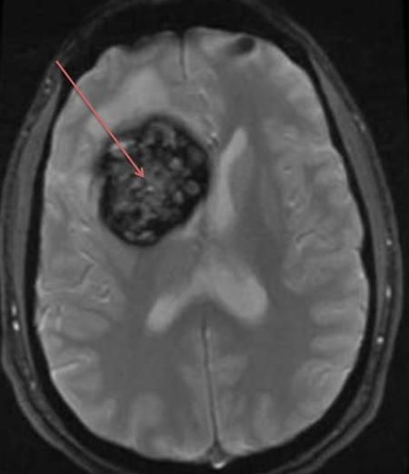
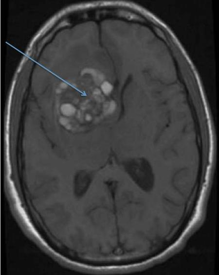
Q30
hard QID 22581
Incorrect
A 14-month-old male patient presents with increasing head size and lethargy. Which of the following is the diagnosis?
Atypical teratoid rhabdoid tumor presents in very young children with heterogeneous mixed solid-cystic appearance and frequent intratumoral hemorrhage. Cerebellopontine angle involvement is characteristic when infratentorial. Shows restricted diffusion on DWI. Can occur supratentorially or infratentorially with aggressive clinical course.
Explanation
Atypical teratoid-rhabdoid tumor (ATRT)
Atypical teratoid-rhabdoid tumors (ATRT) are WHO grade IV highly aggressive tumors occurring in young pediatric patients, composed of rhabdoid cells and neuroectodermal cells that may differentiate into neuronal, glial, epithelia, or mesenchymal cells. They are best characterized as large, heterogeneous masses in infants, which are hyperattenuating on CT and may have internal calcification. The hypercellular nature of these tumors is seen as restricted diffusion (here low-signal on the ADC map – green arrows). They are heterogeneous on T1- and T2-weighted imaging (blue arrow), and internal hemorrhage is common. They characteristically enhance heterogeneously (red arrow). Often there is a relatively small amount of edema for the typically overall large size of the tumor (yellow arrow). They commonly demonstrate subarachnoid seeding and leptomeningeal spread. As such, the entire neuraxis should be imaged prior to resection. Roughly half of these tumors are infratentorial, while about 40% are supratentorial, with the other 10% spanning both supratentorial and infratentorial sites.
Incorrect Answers:
B. Medulloblastoma is a WHO grade IV tumor arising from the superior medullary velum in the roof of the fourth ventricle (in children) and from the cerebellar hemisphere (more lateral, more common in adults). They tend to be spherical in shape and are hyperdense but heterogeneously calcified and hemorrhagic on CT, typically enhancing after administration of contrast. On MRI they are often markedly heterogeneous on T1- and T2-weighted imaging with heterogeneous enhancement and characteristic restricted diffusion. They characteristically spread by subarachnoid seeding and as such, the entire neuraxis should be imaged prior to surgical resection. They typically present with posterior fossa signs such as ataxia and cranial neuropathies.
C and D. Choroid plexus papillomas are WHO grade I neoplasms arising from choroid plexus epithelial cells. Frequently they are intraventricular in location and markedly enhancing with strikingly lobulated margins. They are usually isodense or hyperdense to cerebral tissue and may have calcifications. On MR imaging, they are iso- to hypointense on T1WI and iso- to hyperintense on T2WI with marked enhancement on post-contrast imaging. They are frequently associated with hydrocephalus. They are most commonly located at the atrium of the lateral ventricles (about 50%), with about 40% within the fourth ventricle and a much smaller proportion in the roof of the third ventricle. Choroid plexus papillomas are notoriously difficult to distinguish from choroid plexus carcinomas on imaging, such that they are often followed over long periods of time for evidence of invasion. Often, a definitive diagnosis may only be made on pathologic analysis. Heterogeneity of enhancement and increasing edema along the adjacent brain parenchyma may be the only imaging features to suggest invasive choroid plexus carcinoma. However, these are inconsistent at best.
E. Glioblastoma multiforme (GBM) is a WHO grade IV malignant tumor composed of astrocytes and is the most common intracranial neoplasm in adult patients. It is characterized by a thick enhancing periphery of the tumor mass with internal necrosis. Surrounding edema represents infiltrative tumor extension. Frequently, they cross the midline via the corpus callosum (“butterfly glioma”). In children, GBM more frequently involves posterior fossa structures and the brainstem.
Vital Concept: Atypical teratoid rhabdoid tumor presents in very young children with heterogeneous mixed solid-cystic appearance and frequent intratumoral hemorrhage. Cerebellopontine angle involvement is characteristic when infratentorial. Shows restricted diffusion on DWI. Can occur supratentorially or infratentorially with aggressive clinical course.
Q31
easy QID 39323
Correct
A radiologist posts on their Facebook page a very entertaining X-ray image that they just read. However, the image was not de-identified prior to the posting. Which of the following professional responsibilities has the radiologist most likely violated?
AHonesty with patients(0%)
BImproving quality of care(0%)
CPatient confidentiality(100%)
DPatient relationship(0%)
EProfessional competence(0%)
Your answerC
Correct answerC. Patient confidentiality
Explanation
Patient confidentiality
The radiologist’s public posting of an identifiable image is a violation of patient confidentiality. Respecting patient confidentiality is a key professional responsibility. Physicians must ensure that appropriate safeguards are in place to protect their patients’ personal information, especially as advancements in biotechnology increase access to a person’s demographic data and genetic information. There are situations in which patient confidentiality can be overridden, including when a patient will potentially endanger others.
Incorrect Answers:
A. Honesty with patients is a key professional responsibility. Physicians must honestly and completely inform patients in order to ensure that patients make their best decisions in regard to medical treatment and understanding their recovery. Honesty helps empower patients to decide on their therapeutic course.
B. Improving the quality of care is a key professional responsibility. Physicians must continuously work to improve their patients’ health care. This commitment entails not only maintaining clinical competence but also working collaboratively with other professionals to reduce medical error, increase patient safety, minimize overuse of health care resources, and optimize the outcomes of care.
D. Maintaining an appropriate relationship with patients is a key professional responsibility. Patients are vulnerable to and dependent on physicians providing their care, which should lead physicians to actively avoid taking advantage of their patients. Physicians should never seek sexual advantage, personal financial gain, or other forms of exploitation from their patients.
E. Professional competence is a key professional responsibility. It involves lifelong learning and maintaining the most up-to-date medical knowledge. Professional competence also involves maintaining clinical and team skills necessary to provide quality care.
Q32
easy QID 20607
Correct
Which of the following is the most likely diagnosis in this 81-year-old patient who presents with forearm pain?
AOsteosarcoma(3%)
BOsteoporosis(0%)
CRheumatoid arthritis(0%)
DPaget’s disease(96%)
Your answerD
Correct answerD. Paget’s disease
Vital Concept
Paget’s disease of the bone is most common in older men, and presents with pain, increased bone size, bowing of the bones, kyphosis, and decreased range of motion. Osteolytic changes appear in the early phase, and sclerotic changes in later phases.
Explanation
Paget’s disease
Incorrect Answers:
A. Osteosarcoma is a malignant bone tumor with osteoid matrix, permeative growth and non-expansile cortical destruction.
B. Osteoporosis is characterized by loss of trabeculae in the region of the proximal femur. Diffuse thinning of the cortex is seen.
C. Onset is generally in adulthood, peaking in the 4th and 5th decades. Marginal erosions; important early finding, in the “bare areas”, frequently in the radial side of the metacarpophalangeal (MCP) joints and soft tissue swelling.
Vital Concept: Paget’s disease of the bone is most common in older men, and presents with pain, increased bone size, bowing of the bones, kyphosis, and decreased range of motion. Osteolytic changes appear in the early phase, and sclerotic changes in later phases.
Q33
easy QID 3097
Correct
The images below show an incidental finding on routine sonography of the abdomen in a man with a medical history of tuberous sclerosis. Which of the following is most likely correct?
AHydronephrosis(0%)
BRenal calculus(0%)
CNormal study(0%)
DAngiomyolipoma(70%)
Your answerD
Correct answerD. Angiomyolipoma
Vital Concept
Non-shadowing echogenic renal lesion most likely represents angiomyolipoma. Absence of shadowing excludes calcification or stones.
Explanation
Angiomyolipoma
This is a case of a right angiomyolipoma. These occur in patients with tuberous sclerosis but can also occur spontaneously (in 80% to 90% of cases). Eighty percent of patients with tuberous sclerosis develop a renal lesion (75% are angiomyolipomas and >15% are cysts). An angiomyolipoma is usually a small mass of less than 2 cm in size, which appears markedly echogenic with no shadowing (as seen here). Angiomyolipoma is a benign mass containing adipose tissue, smooth muscle, and thickened vessels. The high echogenicity is due to its fat content. This lesion is well-defined and contains no cystic areas, unlike renal cell carcinoma.
Incorrect Answers:
A. There is no evidence of hydronephrosis.
B. A calculus is also echogenic but produces a strong acoustic shadow.
C. See the explanation above.
Vital Concept: Non-shadowing echogenic renal lesion most likely represents angiomyolipoma. Absence of shadowing excludes calcification or stones.
Q34
moderate QID 24468
Correct
Which of the following devices is shown?
AGeiger counter(20%)
BWell counter(5%)
CIonization chamber(74%)
DGamma camera(0%)
EProportionality chamber(1%)
Your answerC
Correct answerC. Ionization chamber
Vital Concept
Survey meters are portable radiation detection instruments utilizing ionization chamber technology to measure ionization current proportional to radiation exposure, providing real-time dose rate measurements essential for area monitoring, contamination surveys, and ALARA compliance in nuclear medicine.
Explanation
Ionization chamber
A number of devices routinely used in nuclear medicine clinics operate on the principle of the ionization chamber. Radiation survey meters (shown here), some pocket dosimeters, and radionuclide dose calibrators are all examples of specialized basic ionization chambers. The survey meters are typically calibrated to provide units of exposure such as milliroentgens per hour.
Incorrect Answers:
A. A Geiger-Müller counter is a specialized ionization chamber in which there is very high voltage. Any ionization causes an “avalanche” of secondary ionizations. This mode of operation of an ionization chamber allows detection of individual events but does not allow quantification of their energy. As such, Geiger-Müller counters are not useful in the presence of large amounts of radioactivity. They are good for detecting low levels of activity and are widely used as area survey meters and area monitors. They are valuable in detecting radiation contamination.
B. Well counters are dose calibrators set up to provide readings in the units of radioactivity used in clinical practice.
D. Gamma cameras are scintillation devices used to detect emitted radiation in order to generate a diagnostic image.
E. Proportionality chambers are devices mainly used in research to measure alpha and beta particle radiation.
Vital Concept: Survey meters are portable radiation detection instruments utilizing ionization chamber technology to measure ionization current proportional to radiation exposure, providing real-time dose rate measurements essential for area monitoring, contamination surveys, and ALARA compliance in nuclear medicine.
Q35
moderate QID 2752
Correct
Which of the following statements is most accurate regarding the findings?
AThe abnormality is associated with pelvic inflammatory disease.(78%)
BPatients have no change with regard to the risk of developing an ectopic pregnancy.(3%)
CCases rarely present bilaterally.(5%)
DFindings are related to an abnormality of müllerian duct fusion.(8%)
EThere is no associated increased risk of infertility.(5%)
Your answerA
Correct answerA. The abnormality is associated with pelvic inflammatory disease.
Vital Concept
Salpingitis isthmica nodosa results in outpouchings of the fallopian tube that can be well depicted on hysterosalpingogram. Salpingitis isthmica nodosa is thought to be the result of chronic pelvic inflammatory disease and is associated with higher risk of ectopic pregnancy and infertility. Risk factors for chronic pelvic inflammatory disease include sexually transmitted infections, multiple sexual partners/unprotected intercourse, young age under 25, prior episodes of acute PID, and recent IUD insertion.
Explanation
The abnormality is associated with pelvic inflammatory disease.
Hysterosalpingogram shows multiple small outpouchings from the fallopian tube consistent with salpingitis isthmica nodosa. The pathogenesis is unknown, but is speculated to be related to infection, possibly a manifestation of chronic pelvic inflammatory disease. This is not related to müllerian duct anomalies.
Incorrect Answers:
B. Hysterosalpingogram shows multiple small outpouchings from the fallopian tube consistent with salpingitis isthmica nodosa (SIN). SIN patients have a higher risk of both ectopic pregnancy and infertility.
C. Hysterosalpingogram shows multiple small outpouchings from the fallopian tube consistent with salpingitis isthmica nodosa. Up to 80% of cases are bilateral.
D. Findings are not related to an abnormality of müllerian duct fusion; this entity is most likely related to infection.
E. Hysterosalpingogram shows multiple small outpouchings from the fallopian tube consistent with salpingitis isthmica nodosa. SIN patients have a higher risk of both ectopic pregnancy and infertility.
Vital Concept: Salpingitis isthmica nodosa results in outpouchings of the fallopian tube that can be well depicted on hysterosalpingogram. Salpingitis isthmica nodosa is thought to be the result of chronic pelvic inflammatory disease and is associated with higher risk of ectopic pregnancy and infertility. Risk factors for chronic pelvic inflammatory disease include sexually transmitted infections, multiple sexual partners/unprotected intercourse, young age under 25, prior episodes of acute PID, and recent IUD insertion.
Q36
moderate QID 21611
Correct
An incidental finding was noted on a head CT of an asymptomatic 38-year-old female (left image). An MRI was subsequently obtained (right image). What is the most likely diagnosis?
The images depict a pericallosal lipoma with corpus callosal dysgenesis. There is a midline mass measuring fat attenuation on CT (blue arrow) that abuts the anterior/cephalad margin of the corpus callosum. On MRI the mass is uniformly hyperintense to brain parenchyma on pre-contrast T1-weighted imaging (arrowheads), indicating macroscopic fat content. This is a classic location for a pericallosal lipoma. The corpus callosum develops in this order: genu, body, splenium, and finally rostrum. In this case, the splenium (white arrow) and rostrum (not shown) of the corpus callosum are incompletely developed, indicating in utero arrest of normal development.
Incorrect Answers:
A. The images depict a pericallosal lipoma, which is very low attenuation on CT (blue arrow & ROI) and hyperintense on pre-contrast T1-weighted MRI (arrowheads), indicating macroscopic fat content. The corpus callosum is abnormal, as the splenium (white arrow) appears underdeveloped; the normal splenium extends more posteriorly.
C. The corpus callosum is not normal in this case, as there is abnormal development of the splenium (white arrow) and rostrum (not shown). A dermoid cyst is reasonable to consider in the differential diagnosis, but the completely homogeneous hyperintense T1-weighted signal suggests an alternative diagnosis; dermoid cysts are generally more heterogeneous.
D. This is a reasonable alternative. The images below do depict callosal dysgenesis with absent splenium (white arrow) and rostrum (not shown), and dermoid cysts are fat containing midline masses, like the mass pictured. Dermoid cysts, however, are generally more heterogeneous than the homogeneous fat-containing mass in this case, suggesting an alternative diagnosis. Dermoid cysts are generally midline when intracranial (i.e. sella, pineal region) but can be slightly off midline when in the head or neck (periorbital or floor of mouth).
E. There is callosal dysgenesis depicted on the images shown. However, epidermoid cysts are usually off midline, appear like CSF signal on MRI, and characteristically restrict diffusion on DWI. The homogeneous fat-containing mass depicted below suggests an alternative diagnosis.
Q37
moderate QID 2809
Correct
Which of the following is the next best step in management choice for the patient whose x-ray is shown below? Physical exam is significant for absent ipsilateral radial pulse.
AMRI to assess for soft tissue injury(4%)
BCT Angiogram(85%)
CRadiograph of the contralateral arm(4%)
DShoulder radiograph(7%)
Your answerB
Correct answerB. CT Angiogram
Vital Concept
In patients with displaced, comminuted fractures of the limbs, CT Angiogram is the optimal exam to evaluate for suspected associated vascular injury.
Explanation
CT Angiogram
This radiograph depicts displaced, comminuted fractures of the right radius and ulna, indicating high-impact trauma. The absent ipsilateral radial pulse is highly suspicious for vascular injury/compromise. CT Angiogram is the best next step as it will enable thorough evaluation of the vessels and enable prompt and appropriate triage to vascular surgery or interventional radiology, if needed.
Incorrect Answers:
A. Soft tissue assessment is not needed when no clinical findings of tendon rupture exist. This would not be an appropriate next step with physical exam evidence suspicious for vascular injury.
C. Though the other arm may be involved and warrants its own specific evaluation, this would not be an appropriate next step with physical exam evidence suspicious for vascular injury in the arm with known comminuted fractures.
D. Though the shoulder may have associated injury, this would not be the most appropriate next step in a patient with physical exam evidence suspicious for vascular injury.
Vital Concept: In patients with displaced, comminuted fractures of the limbs, CT Angiogram is the optimal exam to evaluate for suspected associated vascular injury.
Q38
moderate QID 43840
Correct
Which of the following is correct regarding the most likely diagnosis in this patient with a sudden onset of knee pain?
AMajor trauma(7%)
BBone density is normal(2%)
CIt is most likely a male(3%)
DOsteoarthritis is a complication(81%)
EThe patient is most likely young and active(8%)
Your answerD
Correct answerD. Osteoarthritis is a complication
Vital Concept
An insufficiency fracture occurs when the mechanical strength of a bone is reduced to the point at which a stress that would not fracture a healthy bone breaks the weak one. The condition that causes reduced bone strength typically does so throughout the skeleton (eg, osteoporosis, osteomalacia, or osteogenesis imperfecta) but may be more localized (eg, demineralization in a limb due to disuse). Progression of insufficiency fracture can result in osteoarthritis.
Explanation
Osteoarthritis is a complication
The coronal proton density weighted and sagittal fat-saturated T2 images show a linear, hypointense fracture line (red arrows) at the central aspect of the medial femoral condyle. There is a significant associated marrow edema (blue arrow). The appearance and location are typical of a subchondral insufficiency fracture.
Subchondral insufficiency fractures are seen in elderly patients, most often female, with osteoporosis. The typical presentation is sudden onset of severe knee pain in the absence of trauma or following minor trauma. The knee is a common location, with fractures seen most often at the medial femoral condyle. The tibial plateaus are another frequently involved location. The osteoporotic bone is susceptible to microfracture, leading to accumulation of fluid within subchondral bone, seen as edema on MR images (blue arrow).
Patients may recover completely with conservative treatment, and in these individuals magnetic resonance (MR) marrow signal characteristics often return to normal. Studies have now confirmed that in many patients, the histopathologic abnormality underlying this process is a subchondral insufficiency fracture, without the presence of necrotic bone. In patients with large, worsening or untreated lesions, progression to osteoarthritis is a possibility.
Incorrect Answers:
A. B. C. As discussed above, these are incorrect answer choices.
Vital Concept: An insufficiency fracture occurs when the mechanical strength of a bone is reduced to the point at which a stress that would not fracture a healthy bone breaks the weak one. The condition that causes reduced bone strength typically does so throughout the skeleton (eg, osteoporosis, osteomalacia, or osteogenesis imperfecta) but may be more localized (eg, demineralization in a limb due to disuse). Progression of insufficiency fracture can result in osteoarthritis.
Q39
moderate QID 21097
Correct
A single axial CT image of a 57-year-old male patient on dialysis is given below. The patient presented with acute left renal and peri-renal hematoma. The patient also had ascites, pericardial effusion, and pleural effusions. Which of the following letters corresponds to the anterior para-renal space?
AA(91%)
BB(2%)
CC(1%)
DD(6%)
Your answerA
Correct answerA. A
Explanation
A
Points to the anterior para-renal space.
Incorrect Answers:
B. Points to the peri-renal space.
C. Points to the posterior para-renal space.
D. Points to the lesser sac containing ascites.
Q40
QID 37591
Correct
In the context of a high reliability organization (HRO), which of the following best relates to the containment of an adverse event when it occurs?
ADesigning general tactics to minimize error(29%)
BAccepting the simplest answer(1%)
CLearning from an organization's response to change(8%)
DDeferring to team-members with necessary knowlege/experience at the point of care(61%)
Your answerD
Correct answerD. Deferring to team-members with necessary knowlege/experience at the point of care
Vital Concept
High reliability organizations contain unexpected adverse events through
Explanation
Deferring to team-members with necessary knowlege/experience at the point of care
According to the ABR Non-Interpretive Skills Study Guide, containment of the impact of an adverse event relates to
commitment to resilience
and
deference to expertise
. This approach is built on practices of high-reliability organizations, which are described as "operating in a high-stress, high-risk, complex environment, continually manag[ing] its environment mindfully, adopting a constant state of vigilance that results in the fewest number of errors". The presence of someone with specific necessary knowledge/experience at the point of care, regardless of their title, most closely relates to
deference to expertise
, as it enables "leaders to defer to the relevant expertise, regardless of its source, while preserving the organizational structure."
Incorrect Answers:
A. Focusing on error and designing efforts to preclude them more closely aligns with the anticipation tactics of high-reliability organizations (HRO) to manage unexpected errors.
B. Reluctance to simplify, not accepting the simplest answer, is another anticipation tactic of HROs to manage unexpected errors.
C. This is an example of sensitivity to operations, an additional focus of anticipation by HROs to manage unexpected errors
Vital Concept: High reliability organizations contain unexpected adverse events through
commitment to resilience
(empowering individuals to adapt and innovate) and
deference to expertise
(enabling leaders to defer to relevant knowledge regardless of hierarchy).
Q41
moderate QID 56076
Correct
A 32-year-old female patient who is a non-smoker presents with several months of dyspnea on exertion, along with increasing fatigue. The patient had a spontaneous pneumothorax 5 years ago, but their medical history is otherwise unremarkable. They have never smoked. As part of their workup, a CT scan is performed (shown below). Which of the following is the most likely diagnosis?
AEmphysema due to alpha-1-antitrypsin deficiency(18%)
Pulmonary lymphangioleiomyomatosis (LAM) causes multiple thin-walled cysts on CT imaging. The most common symptoms are progressive dyspnea and fatigue.
Explanation
Pulmonary lymphangioleiomyomatosis (LAM)
Pulmonary lymphangioleiomyomatosis (LAM) is a rare lung disease characterized by cyst formation and multifocal nodular proliferation of immature smooth muscle and perivascular epithelioid cells (LAM cells). High-resolution CT scans show characteristic diffuse thin-walled cysts. Most patients are pre-menopausal females. In this young female non-smoker, LAM is the most likely diagnosis. Most patients are symptomatic at presentation. 2/3 have dyspnea, 2/3 have fatigue, 1/3 have spontaneous pneumothoraces, and 1/4 have pleural effusions. Patients may also have lymph node involvement or develop chylous effusions in the peritoneal, pleural, and pericardial spaces.
Incorrect Answers:
A. In emphysema, the walls are usually not discernible. Cysts in LAM have an apparent thin wall. Emphysema in a 32-year-old non-smoker should raise suspicion of either being congenital in origin or due to another underlying factor, such as alpha-1-antitrypsin deficiency (which causes emphysema at the lung bases).
B. Pulmonary Langerhans cell histiocytosis (PLCH) is rarely seen in non-smokers. The cysts in this disorder are thicker than in LAM. PLCH is characterized by accumulating Langerhans cells in various organs and tissues. At least 90% of PLCH patients are current smokers.
C. Lung cysts in sarcoidosis are usually associated with extensive fibrosis from advanced disease. Early pulmonary parenchymal sarcoidosis usually has the appearance of upper zone nodularity and both hilar and mediastinal lymphadenopathy.
E. Lymphocytic interstitial pneumonitis (LIP) is a lymphoproliferative disorder characterized by lymphocyte-predominant infiltration of the lungs. LIP is typically associated with ground-glass attenuations, centrilobular nodules, and lung cysts on CT imaging.
Vital Concept: Pulmonary lymphangioleiomyomatosis (LAM) causes multiple thin-walled cysts on CT imaging. The most common symptoms are progressive dyspnea and fatigue.
Q42
hard QID 2896
Correct
During an interventional radiology (IR) procedure, the beam filter is changed from a 2 mm aluminum filter to a 2 mm copper filter. Which of the following will occur?
AThe half-value layer (HVL) of the filtered beam decreases.(25%)
BAverage beam energy decreases.(15%)
CMaximum beam energy decreases.(4%)
DPatient dose decreases.(56%)
Your answerD
Correct answerD. Patient dose decreases.
Vital Concept
Copper's higher atomic number creates superior low-energy photon filtration compared to aluminum, removing "useless dose" radiation that would be absorbed by patient tissues without contributing to image formation, resulting in lower patient dose with maintained or improved image quality.
Explanation
Patient dose decreases.
Copper is a higher x-ray attenuator given its higher Z-value. This will result in a greater amount of attenuation of the beam, particularly in the lower end of the spectrum. The overall effect will be to increase the beam average energy with a small decrease in the beam intensity. The maximum energy will be unaffected.
In IR, the main consideration regarding patient dose is deterministic effects, particularly skin dose, due to the high amount of radiation used. Therefore, the patient dose will decrease from the added filtration of the low energy photons, which contribute to skin dose and do not produce useful information on the image.
Incorrect Answers:
A. The half-value layer (HVL) is the width of a material required to reduce the air kerma of an x-ray or gamma-ray to half its original value. This applies to narrow beam geometry only as broad-beam geometry will experience a large degree of scatter, which will underestimate the degree of attenuation. It is used to quantify polyenergetic beams as opposed to linear and mass attenuation coefficients which are used for monoenergetic beams.
It is an indirect measure of photon energy or the hardness of a beam. A lower HVL indicates low photon energy. After filtration as described in the question stem, the subsequent HVL will be higher as the filtered photons have higher energy (thicker material is required to attenuate half of the penetrating beams). A higher energy beam results in a smaller linear attenuation coefficient.
HVL is related to linear attenuation coefficient (μ) with the following formula:
HVL = 0.693 / μ
Since the Cu filtered beam results in higher energy than an Al filtered beam, the ultimate linear attenuation coefficient is lower, resulting in higher (not lower) half value layer.
Vital Concept: Copper's higher atomic number creates superior low-energy photon filtration compared to aluminum, removing "useless dose" radiation that would be absorbed by patient tissues without contributing to image formation, resulting in lower patient dose with maintained or improved image quality.
Q43
easy QID 2846
Correct
Review the MR images. Which of the following is the most likely diagnosis?
AThyroglossal duct cyst(94%)
BBranchial cleft cyst(2%)
CLymphangioma(1%)
DLaryngocele(2%)
EMetastatic squamous cell carcinoma(1%)
Your answerA
Correct answerA. Thyroglossal duct cyst
Vital Concept
Paramedian location with hyoid bone involvement and simple cystic signal characteristics are pathognomonic for thyroglossal duct cyst.
Explanation
Thyroglossal duct cyst
Images show a fluid signal intensity paramidline mass that appears to involve the hyoid bone. These findings are most compatible with thyroglossal duct cyst. The majority occur in the midline and can be located anywhere along the thyroglossal duct tract. When associated with the anterior hyoid bone, this is a characteristic feature of thyroglossal duct cyst.
Incorrect Answers:
B. This is not a location of any branchial cleft cyst. They are usually more lateral in location adjacent to sternocleidomastoid and generally do not have hyoid involvement.
C. Lymphangiomas do not typically occur in this location and are frequently multilocular.
D. Laryngoceles do not typically occur in this location.
E. Metastatic squamous cell carcinoma can have a cystic appearance, typically when associated with human papilloma virus, but this is not a location of cervical lymph nodes.
Vital Concept: Paramedian location with hyoid bone involvement and simple cystic signal characteristics are pathognomonic for thyroglossal duct cyst.
Q44
moderate QID 44227
Correct
A 34-year-old male is seen in the emergency department after the sudden onset of severe midsternal chest pain. The patient reports having gastroenteritis symptoms for the past 3 days, with recurrent episodes of vomiting. The chest pain began shortly after emesis, is non-radiating, and was not made worse by the exertion required to get to the hospital. An electrocardiogram is normal. A Chest x-ray is performed (shown below). Which of the following is the most appropriate next step in management?
AImmediate transport to operating room(7%)
BObservation only with repeat imaging as necessary(49%)
CFluoroscopy or CT with barium(2%)
DFluoroscopy or CT with water-soluble contrast(43%)
Your answerD
Correct answerD. Fluoroscopy or CT with water-soluble contrast
Vital Concept
Forceful vomiting can cause esophageal perforation leading to a pneumomediastinum (Boerhaave syndrome). If perforation is suspected, it should be ruled out via CT or fluoroscopy with water-soluble contrast.
Explanation
Fluoroscopy or CT with water-soluble contrast
The chest radiographs reveal a significant pneumomediastinum. With a history of forceful emesis, esophageal rupture (Boerhaave syndrome) is a likely diagnosis. Such ruptures usually occur due to failure of cricopharyngeal relaxation during emesis. This causes a sharp rise in intraluminal pressure that typically causes rupture of the intrathoracic distal left posterior esophageal wall. Leakage of gastric contents into the mediastinal space causes a chemical mediastinitis, followed by infection. Pleural effusion may also occur. The perforation has a high fatality rate if untreated. In Mallory-Weiss syndrome the esophageal mucosa is torn, often during vomiting, but the wall is not perforated. Such patients often have hematemesis. Vomiting may cause a pneumomediastinum from an alveolar rupture that causes air to dissect along with the bronchovascular bundles toward the mediastinum. However, esophageal rupture must be ruled out because mortality is high if treatment is delayed. Fluoroscopic evaluation or CT scan with swallowed water-soluble contrast is required. Although barium has superior imaging properties, it is not absorbed well if third-spaced and is irritating to the mediastinum. Water-soluble contrast should be used initially if there is any concern that the GI wall may be compromised.
Incorrect Answers:
A. Surgery is not appropriate without a confirmed diagnosis of perforation.
B. Observation is not appropriate. An esophageal perforation must be ruled out promptly.
C. Barium is not absorbed well if third-spaced. Water-soluble contrast must be used if GI perforation is suspected.
Vital Concept: Forceful vomiting can cause esophageal perforation leading to a pneumomediastinum (Boerhaave syndrome). If perforation is suspected, it should be ruled out via CT or fluoroscopy with water-soluble contrast.
Q45
moderate QID 21591
Incorrect
A 23-year-old female patient presents for evaluation of an abnormality incidentally noted on chest X-ray. Which of the following is the diagnosis?
Scimitar syndrome shows the "scimitar sign" - a curved vertical opacity in the right lung representing anomalous pulmonary venous drainage to IVC, plus right lung hypoplasia and rightward shift of the heart and trachea.
Explanation
Scimitar syndrome
Scimitar syndrome is essentially a combination of pulmonary hypoplasia and partial anomalous pulmonary venous return (PAPVR). It almost exclusively occurs on the right side. The anomalous venous drainage is most commonly to the inferior vena cava (scimitar vein – white arrows and blue arrow), and there can be pulmonary or systemic arterial supply to the right lower lobe (not pictured). The anomalous venous drainage of the right lower lung is curved and resembles a Turkish scimitar when imaged on radiography or in the coronal plane. Right lung hypoplasia and rightward shift of the heart and trachea are also commonly seen in this context.
Incorrect Answers:
B. Total anomalous pulmonary venous connection (TAPVC) is characterized by failure of pulmonary veins to connect to the left atrium. There are three types: 1) Supracardiac, in which a “vertical” vein conducts blood from the lungs to the left innominate vein; 2) Cardiac, in which a common pulmonary vein brings blood from the lungs directly to the right atrium or to the coronary sinus; and 3) Infracardiac, in which common pulmonary veins drain into the IVC or ductus venosus.
C. Pulmonary sequestrations are congenital pulmonary malformations in which a portion of lung does not connect to the bronchial tree or pulmonary arteries. They may be classified as intralobar or extralobar. Extralobar sequestrations possess their own pleural coverings and are fed by a systemic artery with systemic venous drainage. Intralobar sequestrations typically do not possess their own pleural coverings. They are fed by a systemic artery but typically possess pulmonary venous drainage. For this entity, a triangular pleural opacity is usually shown on plain film or CT; this is not seen in this case.
D. Pulmonary slings are characterized by an abnormal branching of the left pulmonary artery from the proximal right pulmonary artery, which forms a sling around the distal trachea. The result is a posterior tracheal and anterior esophageal impression on lateral radiography and fluoroscopy. It is the only vascular anomaly that produces an anterior esophageal impression. Treatment includes surgical relocation of the left pulmonary artery to the main pulmonary artery, anterior to the trachea.
E. Isolated pulmonary hypoplasia may occur in association with multiple clinical syndromes but is most frequently related to compression of pulmonary parenchyma in utero by adjacent structures (such as in congenital diaphragmatic hernia) or due to small chest circumference. The presence of anomalous vessels should lead to an alternate diagnosis.
Vital Concept: Scimitar syndrome shows the "scimitar sign" - a curved vertical opacity in the right lung representing anomalous pulmonary venous drainage to IVC, plus right lung hypoplasia and rightward shift of the heart and trachea.
Q46
easy QID 37395
Correct
Which of the following is true regarding this screening mammogram?
AThe patient's breast density will be static over time.(1%)
BThe patient has a lower risk of developing breast cancer, compared to a patient with low-density breasts.(0%)
CThe patient may benefit from adjunct screening ultrasound.(97%)
DThe patient should undergo biannual diagnostic mammographic examinations.(1%)
Your answerC
Correct answerC. The patient may benefit from adjunct screening ultrasound.
Vital Concept
Adjunct ultrasound in extremely dense breasts improves cancer detection but generates high false-positive rates requiring many additional biopsies. It remains a valuable radiation-free supplemental screening tool for intermediate-risk patients where mammography sensitivity is significantly reduced.
Explanation
The patient may benefit from adjunct screening ultrasound.
Studies have shown that ultrasound can and does detect mammographically occult breast cancer in patient’s with dense breast tissue.
Incorrect Answers:
A. Breast density generally decreases with age. It does not remain static, making this choice incorrect. Notably, patients taking hormone replacement therapy may have an increase in breast density while undergoing treatment.
B. Patient with extremely dense breasts also have a 4.7-fold increased risk of developing breast cancer compared to women with fatty-replaced breasts, making this choice incorrect.
D. There is no recommendation for increased frequency of diagnostic mammography based on breast density.
Vital Concept: Adjunct ultrasound in extremely dense breasts improves cancer detection but generates high false-positive rates requiring many additional biopsies. It remains a valuable radiation-free supplemental screening tool for intermediate-risk patients where mammography sensitivity is significantly reduced.
Q47
hard QID 24476
Incorrect
Which of the following is the dose limit to a patient’s spouse sitting in the waiting room of the nuclear medicine department?
A5 mrem/hr (0.05 mSv/hr)(20%)
B2 mrem/hr (0.02 mSv/hr)(73%)
C100 mrem/hr (1 mSv/hr)(3%)
D0.5 rem/hr (5 mSv/hr)(1%)
Your answerD
Correct answerB. 2 mrem/hr (0.02 mSv/hr)
Vital Concept
Unrestricted public areas including waiting rooms must maintain dose rates below 2 mrem/hr (0.02 mSv/hr) to protect non-occupationally exposed individuals from unnecessary radiation exposure.
Explanation
2 mrem/hr (0.02 mSv/hr)
This is the maximum allowable dose rate for unrestricted areas such as waiting rooms, reception areas, and office spaces where the public may be present. This limit ensures radiation exposure to non-occupationally exposed individuals remains as low as reasonably achievable.
Incorrect Answers:
A: 5 mrem/hr (0.05 mSv/hr) represents the threshold for defining a "radiation area" at 30 cm from a source, not the limit for public spaces.
C: 100 mrem/hr (1 mSv/hr) confuses the high radiation area definition with public area limits.
D: 0.5 rem/hr (5 mSv/hr) incorrectly applies the total dose limit for visitor/caregiver duration of contact rather than an hourly rate limit for public areas.
Vital Concept: Unrestricted public areas including waiting rooms must maintain dose rates below 2 mrem/hr (0.02 mSv/hr) to protect non-occupationally exposed individuals from unnecessary radiation exposure.
Q48
easy QID 47200
Correct
The resistive index is utilized in a variety of clinical settings. Which of the following describes how this parameter is derived?
A(peak diastolic velocity – end diastolic velocity)/peak systolic velocity(4%)
B(peak systolic velocity – end diastolic velocity)/peak systolic velocity(92%)
C(end systolic velocity – end systolic velocity)/peak systolic velocity(1%)
D(peak systolic velocity – end diastolic velocity)/peak diastolic velocity(3%)
E(end systolic velocity – end diastolic velocity)/peak systolic velocity(1%)
Resistive index equals peak systolic velocity minus end-diastolic velocity divided by peak systolic velocity: RI = (PSV - EDV)/PSV, measuring vascular resistance to flow.
Explanation
(peak systolic velocity – end diastolic velocity)/peak systolic velocity
The Doppler-derived renal resistive index is as follows: (peak systolic velocity – end diastolic velocity)/peak systolic velocity, and the mean value of three measurements at each kidney is usually considered. It is a nonspecific value that can be elevated in many scenarios including assessment of renal transplants, evaluation of renal artery stenosis, and chronic kidney disease among others.
Vital Concept: Resistive index equals peak systolic velocity minus end-diastolic velocity divided by peak systolic velocity: RI = (PSV - EDV)/PSV, measuring vascular resistance to flow.
Q49
hard QID 22430
Incorrect
A 63-year-old male patient with hepatocellular carcinoma undergoes the procedure shown. Which of the following is the greatest risk factor for subsequent hepatic abscess formation?
ASevere atherosclerosis(1%)
BHyperbilirubinemia(4%)
CPresence of gallstones(1%)
DPrior biliary sphincterotomy(79%)
EPortal vein thrombosis(14%)
Your answerA
Correct answerD. Prior biliary sphincterotomy
Vital Concept
Primary risk factors for hepatic abscess post-TACE include bilioenteric anastomosis and incompetent sphincter of Oddi from stenting or sphincterotomy. These anatomic alterations enable biliary colonization by enteric flora, predisposing to ascending infection.
Explanation
Prior biliary sphincterotomy
The pictured procedure is transhepatic arterial chemoembolization (TACE). In the setting of prior bilioenteric anastomosis, biliary stents, or even endoscopic sphincterotomy, the biliary tract is commonly colonized with enteric flora. When the biliary tree is colonized by these bacteria, there is a high risk of development of hepatic abscess. In one series, six of seven patients with prior bilioenteric anastomosis developed subsequent hepatic abscess. As such, care must be taken in selecting these patients for TACE. If TACE is performed, pre-procedure antibiotic bowel preparation and long-term post-procedure antibiotics with expectant management for the development of hepatic abscess is warranted.
Incorrect Answers:
A, B, C, and E. None of these carry any significantly increased risk of hepatic abscess.
Vital Concept: Primary risk factors for hepatic abscess post-TACE include bilioenteric anastomosis and incompetent sphincter of Oddi from stenting or sphincterotomy. These anatomic alterations enable biliary colonization by enteric flora, predisposing to ascending infection.
Q50
QID 4981
Correct
The following magnetic resonance image (MRI) of the first metacarpophalangeal (MCP) joint was obtained in a patient with a minimally displaced fracture of the base of the first proximal phalanx. Which of the following is the abnormality indicated by the arrows?
ABennett fracture(3%)
BRolando fracture(1%)
CStener lesion(92%)
DBoutonniere deformity(0%)
Your answerC
Correct answerC. Stener lesion
Vital Concept
A Stener lesion is a complete tear of the ulnar collateral ligament (UCL) from the thumb proximal phalanx at the level of the metacarpophalangeal (MCP) joint that is displaced superficial to the adductor pollicis aponeurosis, leading to interposition of the aponeurosis between the UCL and the MCP joint. The interposition of the adductor aponeurosis distinguishes the Stener lesion from other UCL injuries and impedes healing, thereby necessitating surgery.
Explanation
Stener lesion
The MRI shows the classic "yo-yo on a string" indicative of a Stener lesion. A Stener lesion typically occurs in the setting of an avulsion fracture of the base of the first proximal phalanx (gamekeeper's thumb) when the torn ulnar collateral ligament (UCL) is displaced superficial to the aponeurosis of the adductor pollicis. The "string" (arrowhead) represents the adductor pollicis aponeurosis and the "yo-yo" (arrow) is the torn and retracted ulnar collateral ligament. This is an important finding because it is an indication for surgical repair.
Incorrect Answers:
A. B. Bennett and Rolando fractures are fractures of the base of the first metacarpal.
D. A boutonniere deformity is a slip of the extensor tendon at the middle phalangeal insertion, which results in proximal interphalangeal (PIP) joint flexion with distal interphalangeal (DIP) joint extension.
Vital Concept: A Stener lesion is a complete tear of the ulnar collateral ligament (UCL) from the thumb proximal phalanx at the level of the metacarpophalangeal (MCP) joint that is displaced superficial to the adductor pollicis aponeurosis, leading to interposition of the aponeurosis between the UCL and the MCP joint. The interposition of the adductor aponeurosis distinguishes the Stener lesion from other UCL injuries and impedes healing, thereby necessitating surgery.